DENEME - 1
Deneme - 1 · Soru 1Cevap: C
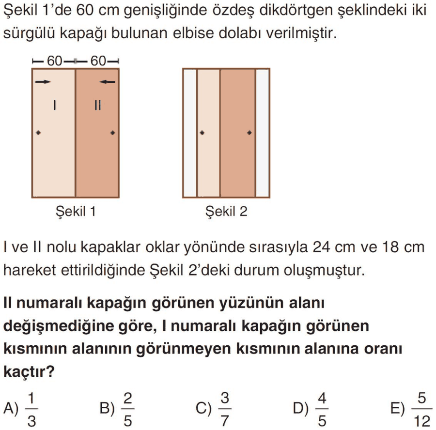
Çözüm
- Son durumda I: $[24,84]$, II: $[42,102]$. II'nin görünen alanı değişmediğine göre II önde.
- I'in görünmeyen kısmı $84-42=42$, görünen $60-42=18$ (cm genişlik, yükseklik aynı).
- Oran $\dfrac{18}{42}=\dfrac37$.
Cevap: C
Deneme - 1 · Soru 2Cevap: A
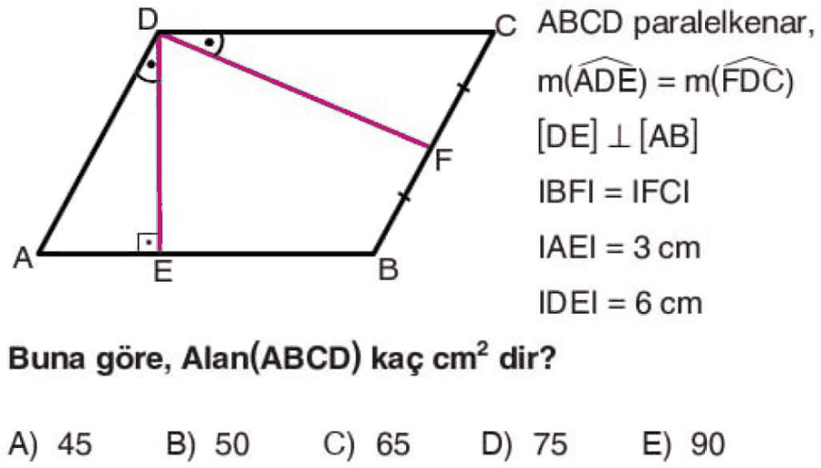
Çözüm
- $A(0,0)$, $E(3,0)$, $D(3,6)$, $B(b,0)$, $C(b+3,6)$; $F$ orta nokta: $(b+1.5,\,3)$.
- $\tan(\widehat{ADE})=\tfrac36=\tfrac12$; $\tan(\widehat{FDC})=\dfrac{3}{b-1.5}$.
- Eşitlikten $b-1.5=6$ → $|AB|=7.5$; $\text{Alan}=7.5\cdot6=45$.
Cevap: A
Deneme - 1 · Soru 3Cevap: E
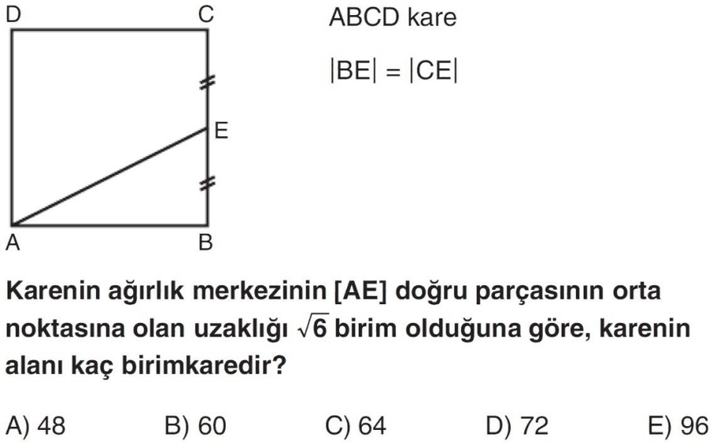
Çözüm
- Kenar $2a$: $A(0,0)$, $E(2a,a)$, merkez $O(a,a)$; $[AE]$'nin orta noktası $M(a,\tfrac a2)$.
- $|OM|=\tfrac a2=\sqrt6$ → $a=2\sqrt6$, kenar $4\sqrt6$.
- Alan $=96$.
Cevap: E
Deneme - 1 · Soru 4Cevap: A
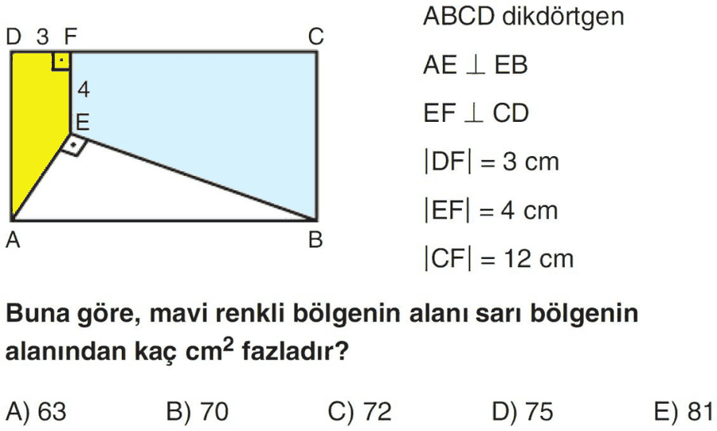
Çözüm
- $|AD|=h$; $E$, $D$'den 3 sağda, 4 aşağıda; $|AB|=3+12=15$.
- $[AE]\perp[EB]$: $3\cdot12=(h-4)^2$ → $h=10$.
- Sarı $ADFE$: $\tfrac{10+4}{2}\cdot3=21$; mavi $FCBE$: $\tfrac{4+10}{2}\cdot12=84$; fark 63.
Cevap: A
Deneme - 1 · Soru 5Cevap: B
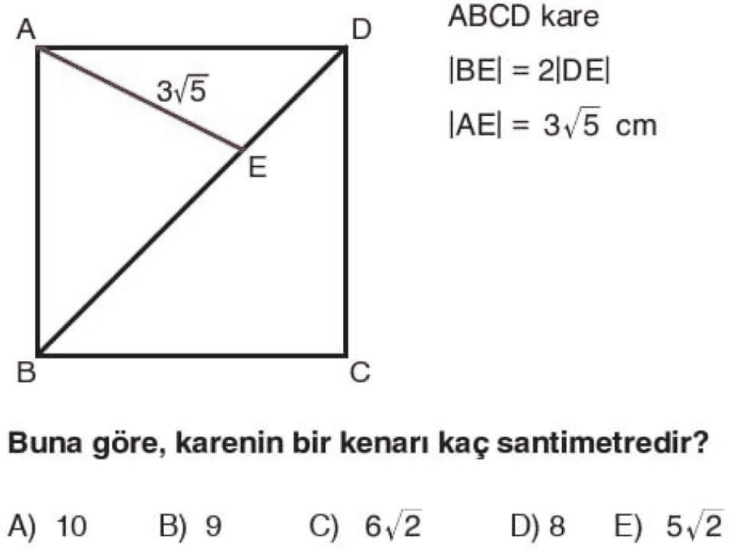
Çözüm
- $B(0,0)$, $D(a,a)$, $A(0,a)$; $|BE|=2|DE|$ → $E(\tfrac{2a}{3},\tfrac{2a}{3})$.
- $|AE|^2=\tfrac{4a^2}{9}+\tfrac{a^2}{9}=\tfrac{5a^2}{9}=45$ → $a=9$.
Cevap: B
Deneme - 1 · Soru 6Cevap: E
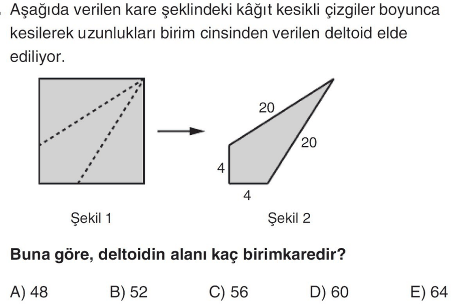
Çözüm
- Kare kenarı $s$; deltoidin köşeleri $(s,s)$, $(0,4)$, $(0,0)$, $(4,0)$.
- $\sqrt{s^2+(s-4)^2}=20$ → $s^2-4s-192=0$ → $s=16$.
- Köşegenler $16\sqrt2$ ve $4\sqrt2$: alan $\tfrac12\cdot16\sqrt2\cdot4\sqrt2=64$.
Cevap: E
Deneme - 1 · Soru 7Cevap: B
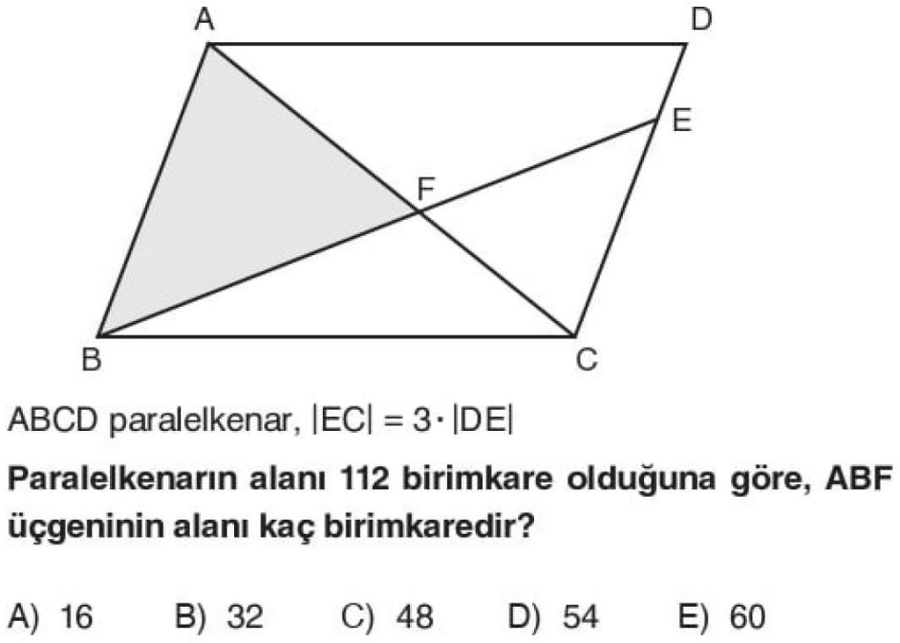
Çözüm
- $|DC|=4k$, $|EC|=3k$. $AB\parallel EC$ → $ABF\sim CEF$, $\dfrac{|AF|}{|FC|}=\dfrac{4}{3}$.
- $\text{Alan}(ABC)=56$ → $\text{Alan}(ABF)=\tfrac47\cdot56=32$.
Cevap: B
Deneme - 1 · Soru 8Cevap: C
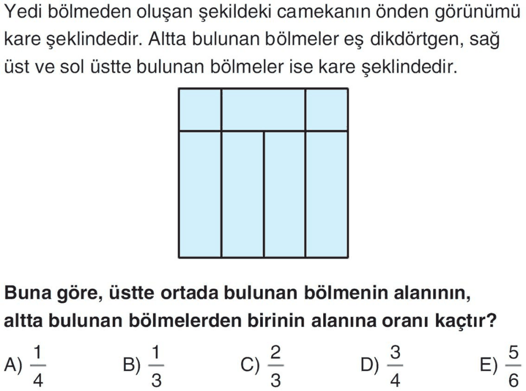
Çözüm
- Kare kenarı $a$; alttaki 4 eş dikdörtgenin genişliği $\tfrac a4$.
- Üst köşelerdeki kareler de $\tfrac a4$ kenarlı → alt bölmelerin yüksekliği $\tfrac{3a}{4}$; üst orta bölme $\tfrac a2\times\tfrac a4$.
- Oran $\dfrac{a^2/8}{3a^2/16}=\dfrac23$.
Cevap: C
Deneme - 1 · Soru 9Cevap: D
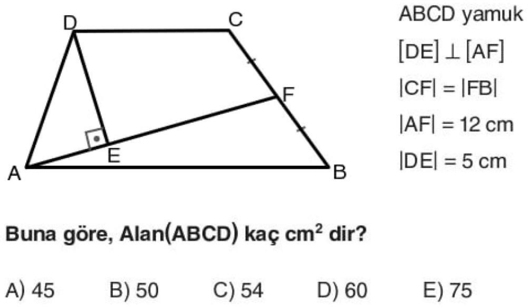
Çözüm
- $F$, $[BC]$ kenarının orta noktası olduğundan $\text{Alan}(ADF)=\tfrac12\,\text{Alan}(ABCD)$.
- $[DE]\perp[AF]$: $\text{Alan}(ADF)=\dfrac{12\cdot5}{2}=30$.
- $\text{Alan}(ABCD)=60$.
Cevap: D
Deneme - 1 · Soru 10Cevap: C
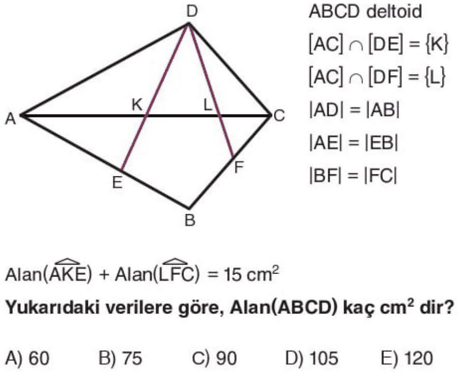
Çözüm
- $A(0,0)$, $C(c,0)$, $B(p,-q)$, $D(p,q)$; $E(\tfrac p2,-\tfrac q2)$, $F(\tfrac{p+c}{2},-\tfrac q2)$.
- $K(\tfrac{2p}{3},0)$ → $\text{Alan}(AKE)=\tfrac{pq}{6}$; $L(\tfrac{2p+c}{3},0)$ → $\text{Alan}(LFC)=\tfrac{(c-p)q}{6}$.
- Toplam $\tfrac{cq}{6}=15$ → $cq=90$; $\text{Alan}(ABCD)=\tfrac12\cdot c\cdot2q=90$.
Cevap: C
Deneme - 1 · Soru 11Cevap: D
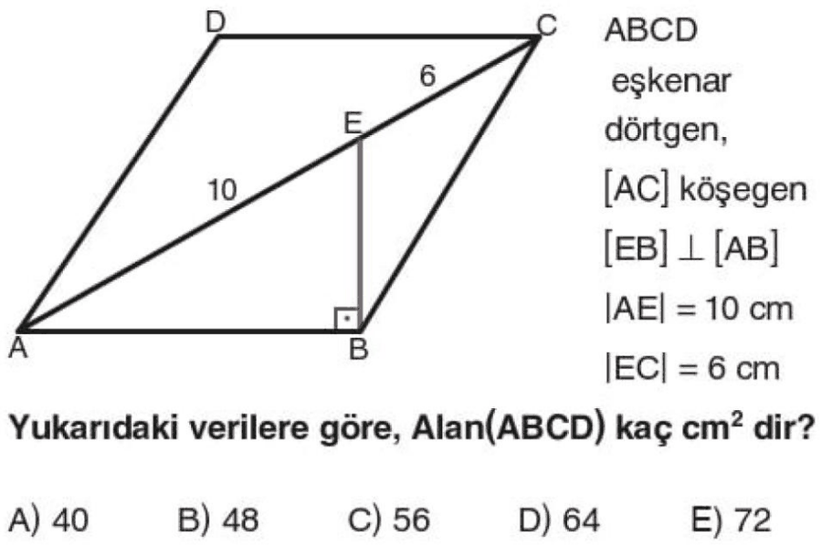
Çözüm
- $|AC|=16$, $O$ merkez: $|AO|=8$, $|OE|=2$. Köşegenler dik → $ABE$ dik üçgeninde ($B$ dik) $[BO]$ yükseklik.
- $|BO|^2=8\cdot2=16$ → $|BO|=4$, $|BD|=8$.
- $\text{Alan}=\tfrac{16\cdot8}{2}=64$.
Cevap: D
Deneme - 1 · Soru 12Cevap: B
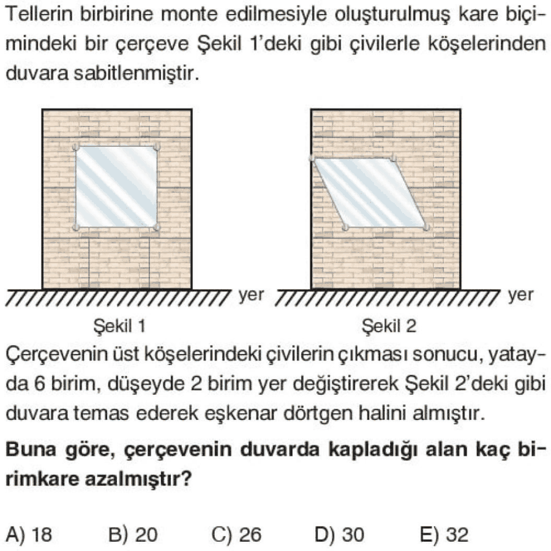
Çözüm
- Kenar $a$: yeni yükseklik $a-2$, yatay kayma 6 → $a^2=36+(a-2)^2$ → $a=10$.
- Kare alanı 100, eşkenar dörtgen alanı $10\cdot8=80$; azalma 20.
Cevap: B
DENEME - 2
Deneme - 2 · Soru 1Cevap: C
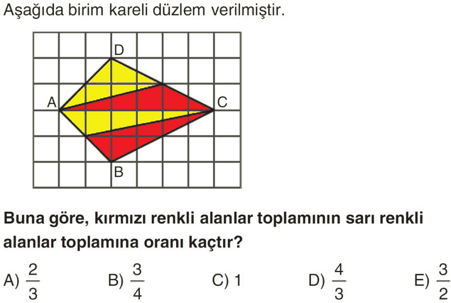
Çözüm
- Koordinatlar: $A(1,3)$, $D(3,5)$, $C(7,3)$, $B(3,1)$, $P(5,4)$, $Q(2,2)$.
- Sarı: $ADP=3$, $ACQ=3$; kırmızı: $APC=3$, $QCB=3$ (koordinatlarla alan).
- Oran $\dfrac{6}{6}=1$.
Cevap: C
Deneme - 2 · Soru 2Cevap: B
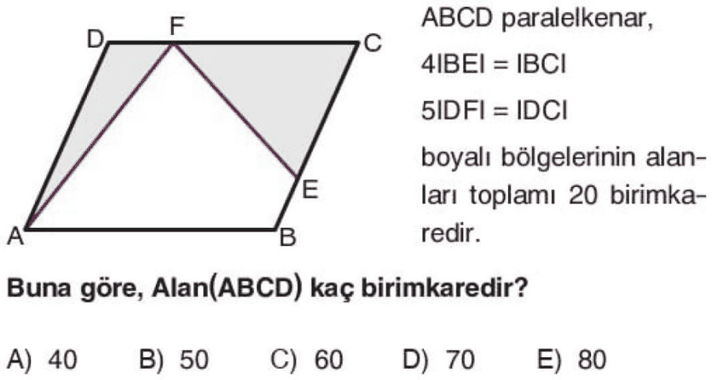
Çözüm
- $\text{Alan}(ADF)=\dfrac{|DF|}{|DC|}\cdot\dfrac S2=\dfrac S{10}$.
- $\text{Alan}(FCE)=\dfrac{|FC|}{|DC|}\cdot\dfrac{|CE|}{|CB|}\cdot\dfrac S2=\dfrac45\cdot\dfrac34\cdot\dfrac S2=\dfrac{3S}{10}$.
- $\dfrac{S}{10}+\dfrac{3S}{10}=20$ → $S=50$.
Cevap: B
Deneme - 2 · Soru 3Cevap: E
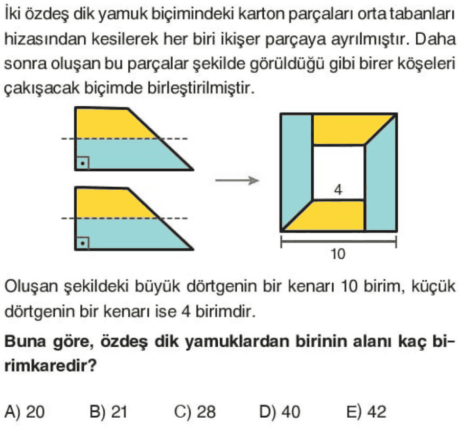
Çözüm
- Dört parça, dış kenarı 10, iç kenarı 4 olan kare çerçeveyi tam kaplıyor: alan $100-16=84$.
- Bu dört parça iki özdeş dik yamuktan oluştuğundan bir yamuğun alanı $\dfrac{84}{2}=42$.
Cevap: E
Deneme - 2 · Soru 4Cevap: C
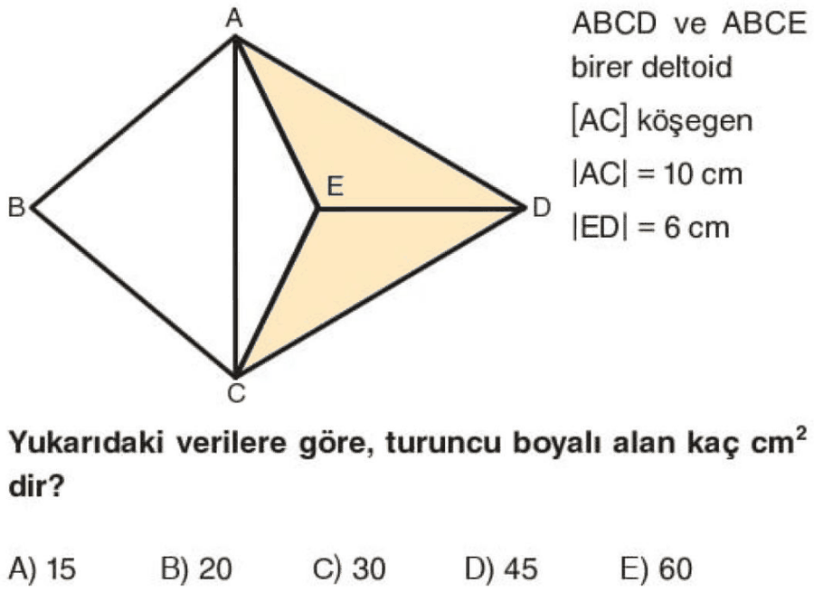
Çözüm
- Turuncu bölge = $\text{Alan}(ABCD)-\text{Alan}(ABCE)$.
- Deltoid alanı $\tfrac12\cdot$köşegenler çarpımı: $\tfrac12|AC|\cdot|BD|-\tfrac12|AC|\cdot|BE|=\tfrac12|AC|\cdot|ED|$.
- $=\tfrac12\cdot10\cdot6=30$.
Cevap: C
Deneme - 2 · Soru 5Cevap: E
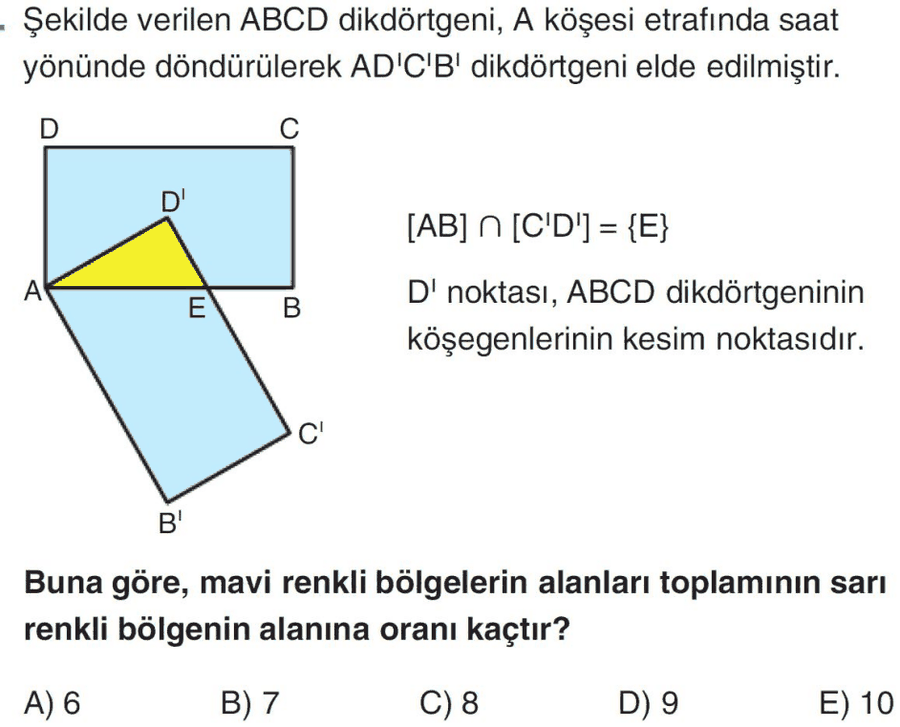
Çözüm
- $|AD'|=|AD|=h$ ve $D'$ merkez: $\tfrac{w^2+h^2}{4}=h^2$ → $w=\sqrt3h$; döndürme açısı $60^\circ$.
- $h=2$: $D'(\sqrt3,1)$, $C'(2\sqrt3,-2)$ → $E(\tfrac{4\sqrt3}{3},0)$; sarı $AD'E=\tfrac{2\sqrt3}{3}$.
- Mavi $=2\cdot4\sqrt3-2\cdot\tfrac{2\sqrt3}{3}=\tfrac{20\sqrt3}{3}$; oran 10.
Cevap: E
Deneme - 2 · Soru 6Cevap: D
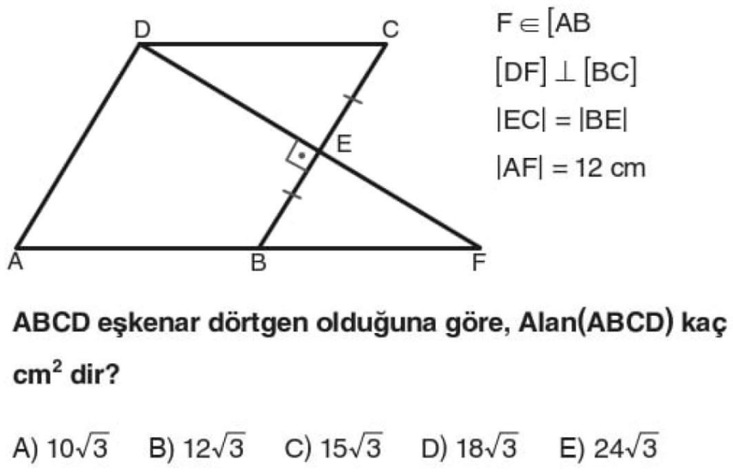
Çözüm
- $[DE]\perp[BC]$ ve $E$ orta nokta → $|DB|=|DC|$; $BCD$ eşkenar, $m(\widehat{A})=60^\circ$.
- Kenar $a$: $A(0,0)$, $B(a,0)$, $D(\tfrac a2,\tfrac{a\sqrt3}{2})$; $DE$ doğrusu $AB$ doğrusunu $x=2a$'da keser → $|AF|=2a=12$, $a=6$.
- $\text{Alan}=a^2\sin60^\circ=18\sqrt3$.
Cevap: D
Deneme - 2 · Soru 7Cevap: E
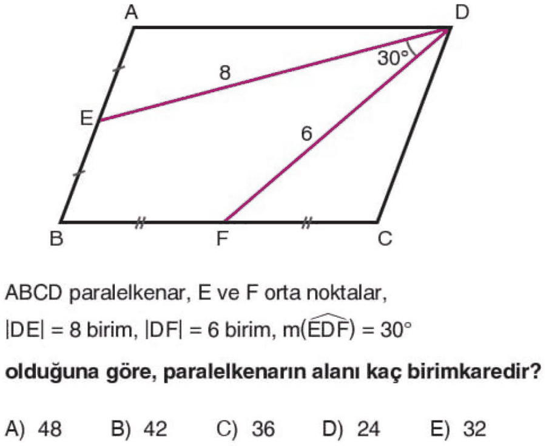
Çözüm
- $\text{Alan}(DEF)=\tfrac12\cdot8\cdot6\cdot\sin30^\circ=12$.
- Alan $S$ ise $\text{Alan}(ADE)=\text{Alan}(DCF)=\tfrac S4$, $\text{Alan}(EBF)=\tfrac S8$.
- $\text{Alan}(DEF)=S-\tfrac S4-\tfrac S4-\tfrac S8=\tfrac{3S}{8}=12$ → $S=32$.
Cevap: E
Deneme - 2 · Soru 8Cevap: C
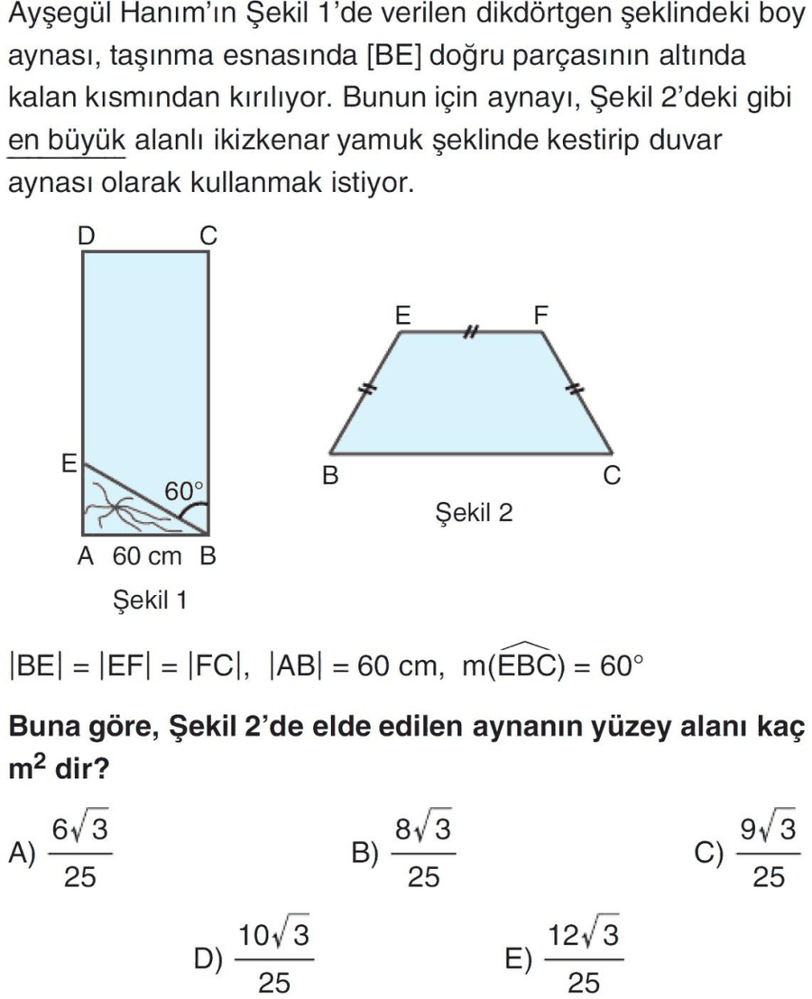
Çözüm
- $m(\widehat{EBC})=60^\circ$ → $[BE]$, $[AB]$ ile $30^\circ$ yapar: $|BE|=\dfrac{60}{\cos30^\circ}=40\sqrt3$ cm.
- Üç kenarı $a$ olan ikizkenar yamuğun en büyük alanı taban açıları $60^\circ$ iken: $\tfrac{3\sqrt3}{4}a^2$.
- $\tfrac{3\sqrt3}{4}\cdot4800=3600\sqrt3$ cm² $=\dfrac{9\sqrt3}{25}$ m².
Cevap: C
Deneme - 2 · Soru 9Cevap: D
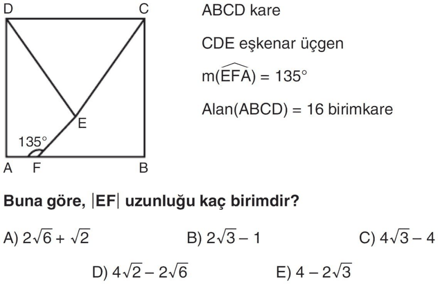
Çözüm
- Kenar 4: $D(0,4)$, $C(4,4)$, $E(2,\,4-2\sqrt3)$.
- $m(\widehat{EFA})=135^\circ$ → $[FE]$ yatayla $45^\circ$ yapar; $E$'nin yüksekliği $4-2\sqrt3$.
- $|EF|=\sqrt2\,(4-2\sqrt3)=4\sqrt2-2\sqrt6$.
Cevap: D
Deneme - 2 · Soru 10Cevap: B
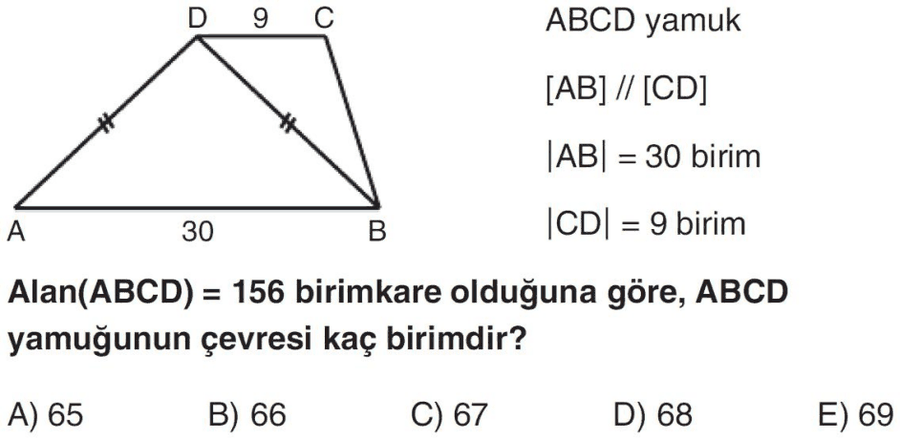
Çözüm
- $h=\dfrac{2\cdot156}{30+9}=8$.
- $|AD|=|DB|$ → $D$'nin izdüşümü $[AB]$'nin orta noktası: $|AD|=\sqrt{15^2+8^2}=17$.
- $C$, $A$'dan 24 birim ileride: $|CB|=\sqrt{6^2+8^2}=10$; çevre $30+10+9+17=66$.
Cevap: B
Deneme - 2 · Soru 11Cevap: C
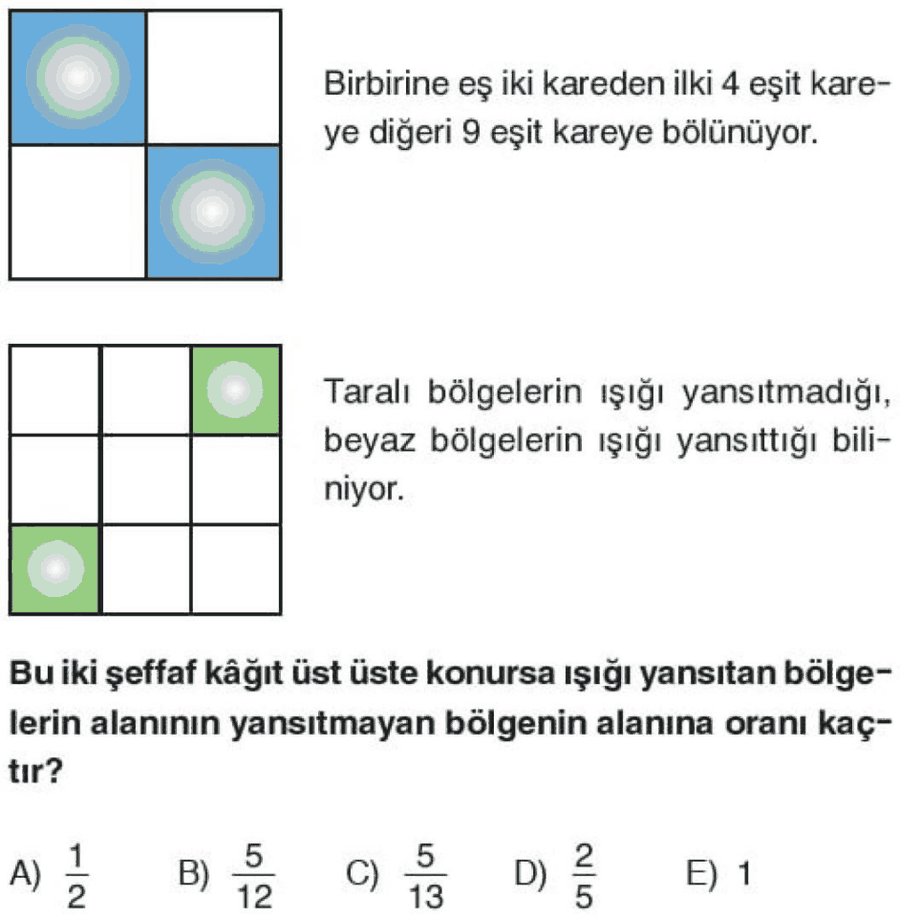
Çözüm
- Kenar 6 al: birinci kâğıtta iki $3\times3$ taralı (18), ikincide iki $2\times2$ taralı (8).
- Taralı bölgeler üst üste gelmiyor: yansıtmayan $18+8=26$, yansıtan $36-26=10$.
- Oran $\dfrac{10}{26}=\dfrac{5}{13}$.
Cevap: C
Deneme - 2 · Soru 12Cevap: A
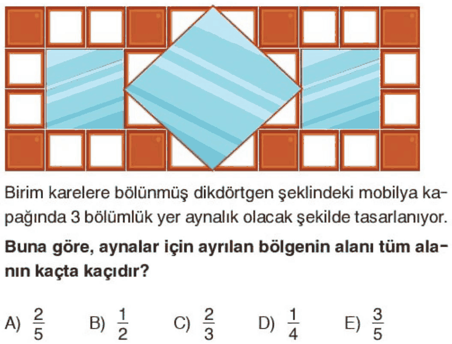
Çözüm
- Kapak 10×4 = 40 birim kare.
- Yan aynalar 2×2'şer: $4+4$; ortadaki kare ayna köşegenleri 4 olan kare: $\tfrac{4\cdot4}{2}=8$.
- $\dfrac{16}{40}=\dfrac25$.
Cevap: A
DENEME - 3
Deneme - 3 · Soru 1Cevap: E
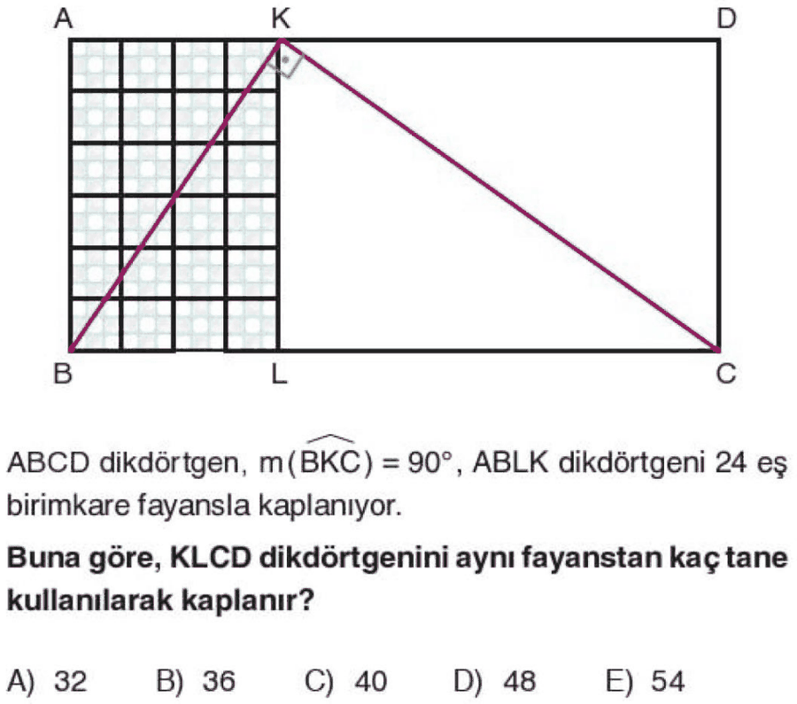
Çözüm
- $ABLK$ 4×6 fayans: $|AK|=4$, $|AB|=|KL|=6$.
- $BKC$ dik üçgeninde $[KL]$ yükseklik: $|KL|^2=|BL|\cdot|LC|$ → $36=4|LC|$ → $|LC|=9$.
- $KLCD=6\cdot9=54$ fayans.
Cevap: E
Deneme - 3 · Soru 2Cevap: D
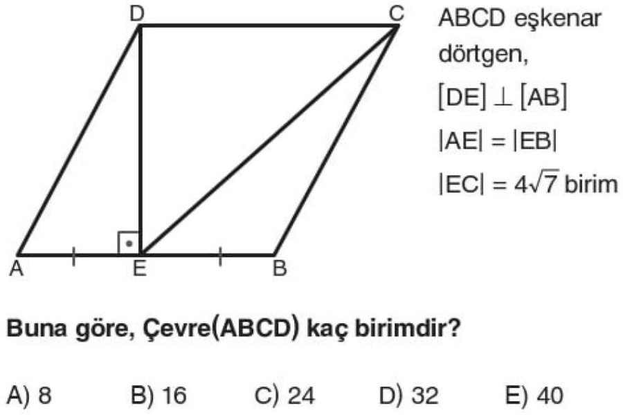
Çözüm
- $D$'nin izdüşümü $[AB]$'nin orta noktası → $|DA|=|DB|=|AB|$, $ABD$ eşkenar, kenar $a$.
- $E(\tfrac a2,0)$, $C(\tfrac{3a}{2},\tfrac{a\sqrt3}{2})$: $|EC|^2=a^2+\tfrac{3a^2}{4}=\tfrac{7a^2}{4}=112$ → $a=8$.
- $\text{Çevre}=4\cdot8=32$.
Cevap: D
Deneme - 3 · Soru 3Cevap: E
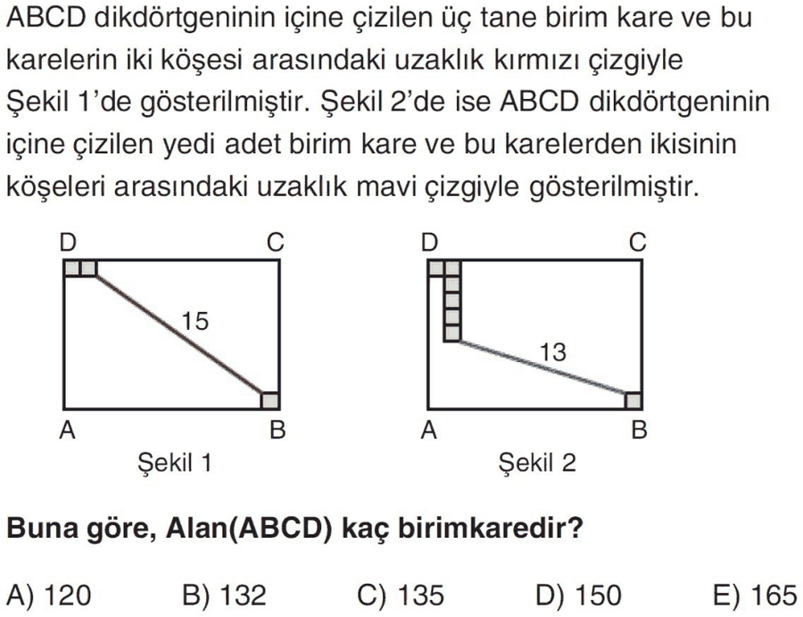
Çözüm
- Genişlik $W$, yükseklik $H$: kırmızı $(W-3)^2+(H-2)^2=225$, mavi $(W-3)^2+(H-6)^2=169$.
- Fark: $8H-32=56$ → $H=11$; $(W-3)^2=144$ → $W=15$.
- $\text{Alan}=15\cdot11=165$.
Cevap: E
Deneme - 3 · Soru 4Cevap: C
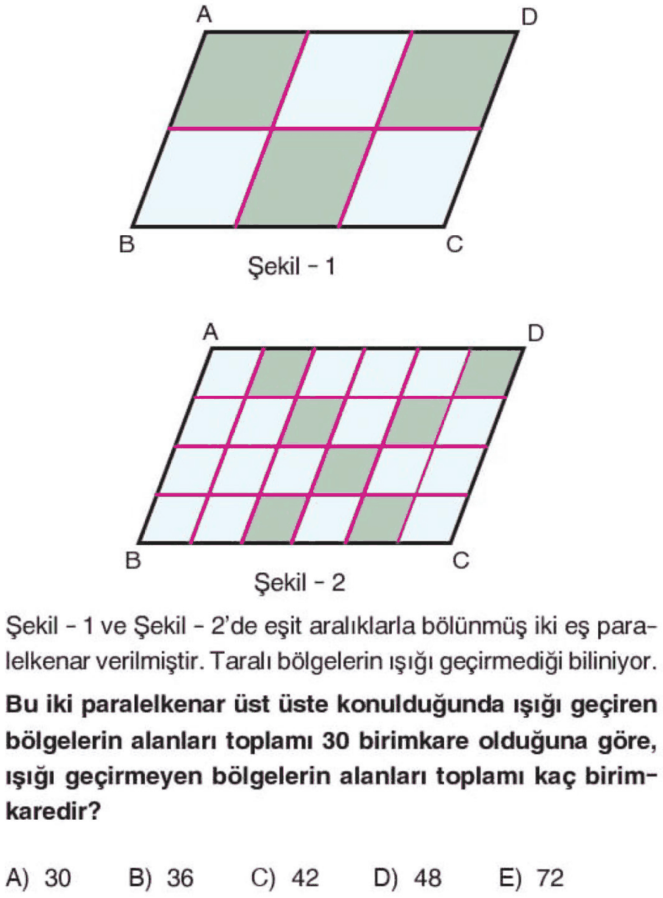
Çözüm
- Şekil 2'yi 24 küçük parçaya böl; Şekil 1'in her parçası 4 küçük parçadır.
- Şekil 1'in ışık geçiren 3 parçası = 12 küçük parça; bunlardan 2'si Şekil 2'de taralı.
- Işığı geçiren: $12-2=10$ küçük parça $=30$ → bir parça 3 birimkare.
- Toplam $24\cdot3=72$; ışığı geçirmeyen $72-30=42$.
Cevap: C
Deneme - 3 · Soru 5Cevap: A
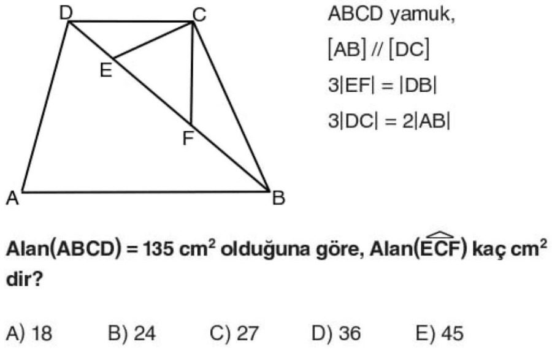
Çözüm
- $|DC|:|AB|=2:3$; $\text{Alan}(DBC)$, yükseklik aynı olduğundan $\dfrac{2}{2+3}\cdot135=54$.
- $E$, $F$ köşegen $[DB]$ üzerinde ve $|EF|=\tfrac13|DB|$.
- $\text{Alan}(ECF)=\tfrac13\cdot54=18$.
Cevap: A
Deneme - 3 · Soru 6Cevap: C
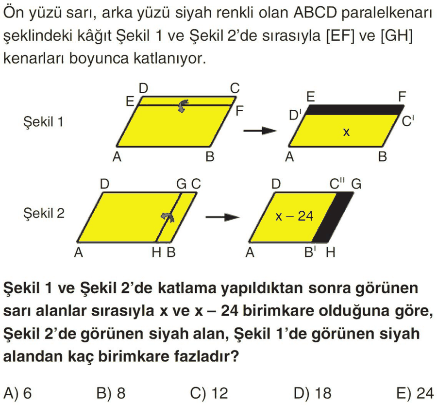
Çözüm
- Bir şerit katlanınca görünen siyah, şeridin alanı $b$ kadardır ve aynı alan kadar sarıyı örter: görünen sarı $S-2b$.
- $x=S-2b_1$, $x-24=S-2b_2$ → $2(b_2-b_1)=24$.
- $b_2-b_1=12$.
Cevap: C
Deneme - 3 · Soru 7Cevap: D
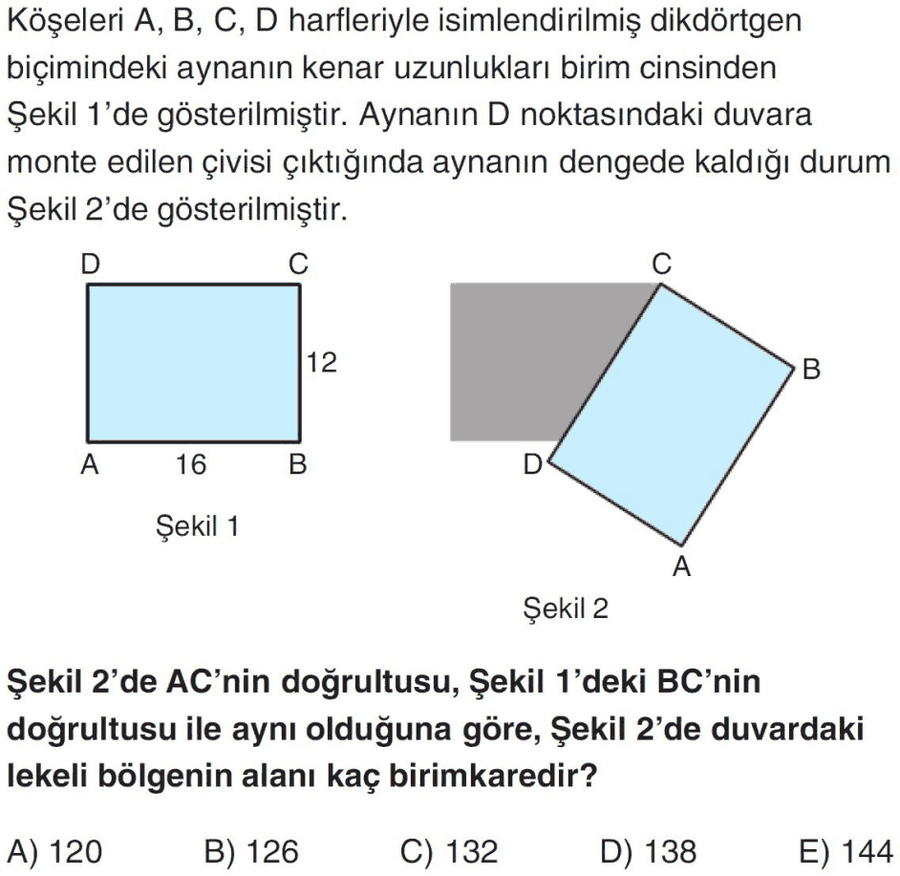
Çözüm
- Ayna $C$ çivisi etrafında döner; $|AC|=\sqrt{16^2+12^2}=20$ düşey olur: $A'(16,-8)$, $D'(6.4,-0.8)$, $B'(25.6,4.8)$.
- Eski ve yeni konumun ortak bölgesi: $C$, $(16,0)$ ve $[A'D']$, $[D'C]$ doğrularıyla sınırlı; alanı 54 birimkare (köşe koordinatlarıyla).
- Lekeli bölge $=16\cdot12-54=138$.
Cevap: D
Deneme - 3 · Soru 8Cevap: C
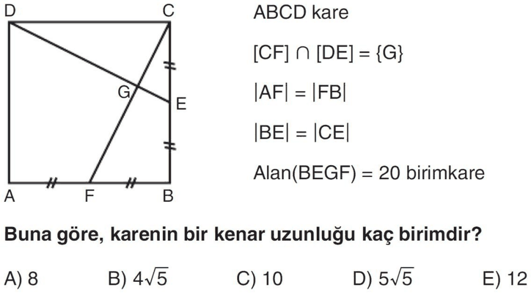
Çözüm
- Kenar 2: $F(1,0)$, $E(2,1)$, $G=CF\cap DE=(1.6,\,1.2)$.
- $\text{Alan}(BEGF)=0.8$ → karenin $\tfrac{0.8}{4}=\tfrac15$'i.
- Karenin alanı $5\cdot20=100$ → kenar 10.
Cevap: C
Deneme - 3 · Soru 9Cevap: B
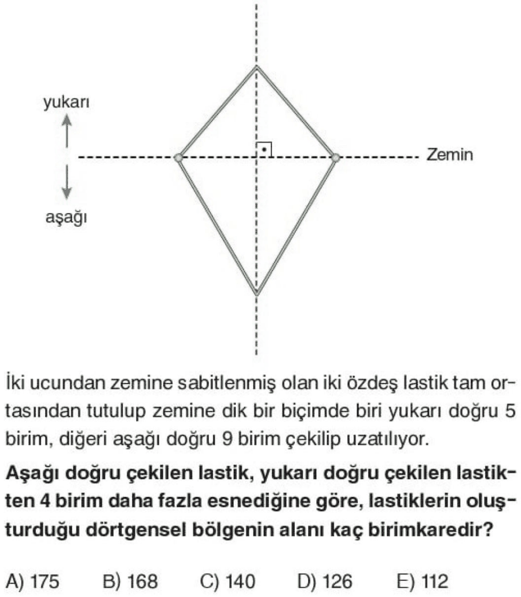
Çözüm
- Sabitleme noktaları arası $2a$: $2\sqrt{a^2+81}-2\sqrt{a^2+25}=4$.
- $\sqrt{a^2+25}=u$ → $\sqrt{u^2+56}=u+2$ → $u=13$, $a=12$.
- Dörtgenin köşegenleri $24$ ve $5+9=14$: $\text{Alan}=\tfrac{24\cdot14}{2}=168$.
Cevap: B
Deneme - 3 · Soru 10Cevap: E
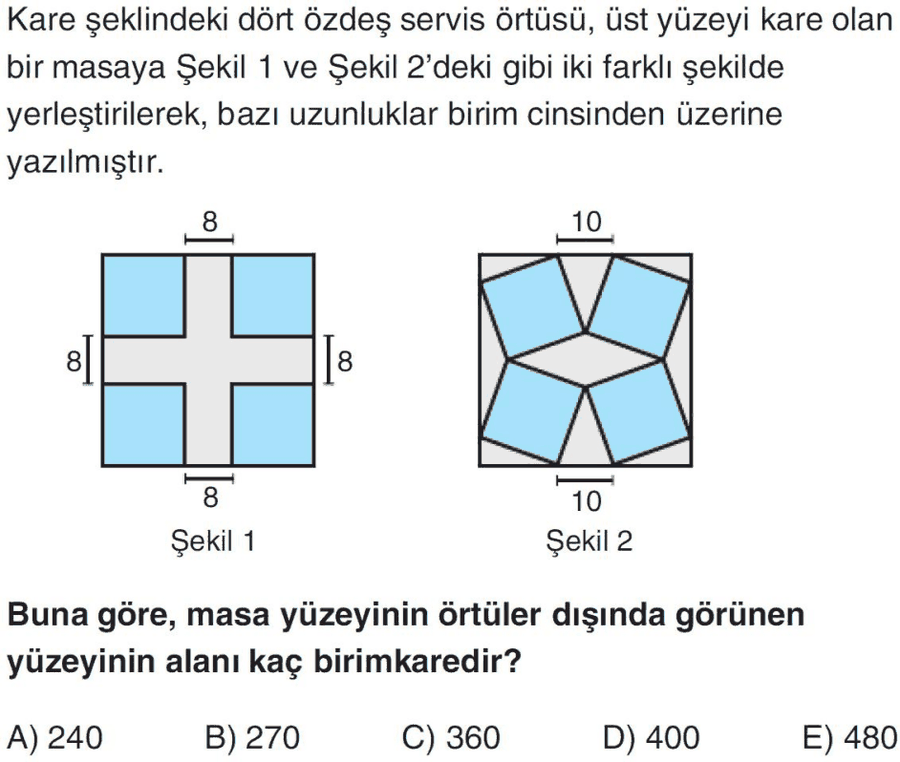
Çözüm
- Masa kenarı $T$, örtü kenarı $c$. Şekil 1: $T=2c+8$.
- Şekil 2: örtünün üst kenardaki köşesi ortadan 5, kenara olan köşesi $\tfrac T2-5$ uzaklıkta: $c^2=5^2+(\tfrac T2-5)^2$.
- $(\tfrac T2-4)^2=25+(\tfrac T2-5)^2$ → $T=34$, $c=13$.
- Görünen alan $34^2-4\cdot169=480$.
Cevap: E
Deneme - 3 · Soru 11Cevap: B
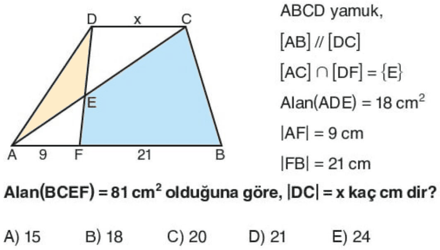
Çözüm
- $AFD$ ve $AFC$ aynı taban ve yükseklikte → $\text{Alan}(FEC)=\text{Alan}(ADE)=18$.
- $\text{Alan}(BCEF)=\text{Alan}(FEC)+\text{Alan}(FBC)=18+\tfrac{21h}{2}=81$ → $h=6$.
- $\text{Alan}(AFC)=\tfrac{9\cdot6}{2}=27$ → $\text{Alan}(AEF)=27-18=9$.
- $\dfrac{|AE|}{|EC|}=\dfrac{9}{18}=\dfrac{|AF|}{|DC|}=\dfrac{9}{x}$ → $x=18$.
Cevap: B
Deneme - 3 · Soru 12Cevap: C
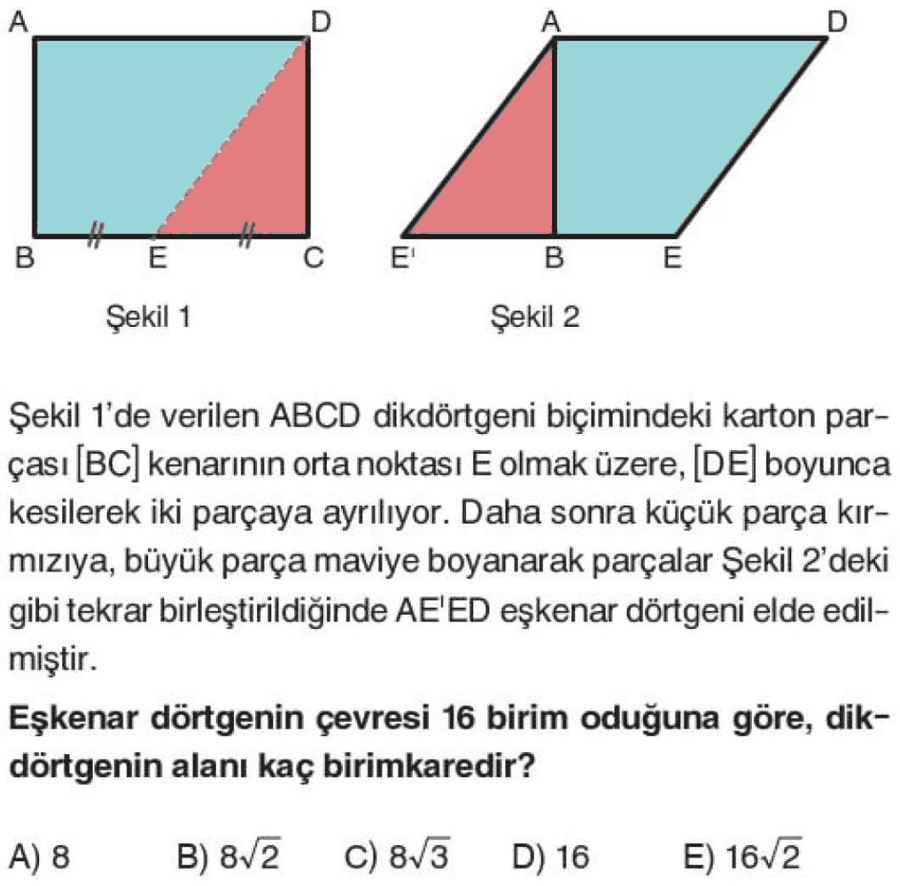
Çözüm
- Eşkenar dörtgenin kenarı $\tfrac{16}{4}=4$: $|AD|=|DE|=4$.
- $|BC|=|AD|=4$ → $|EC|=2$; $|DC|=\sqrt{16-4}=2\sqrt3$.
- $\text{Alan}(ABCD)=4\cdot2\sqrt3=8\sqrt3$.
Cevap: C
DENEME - 4
Deneme - 4 · Soru 1Cevap: C
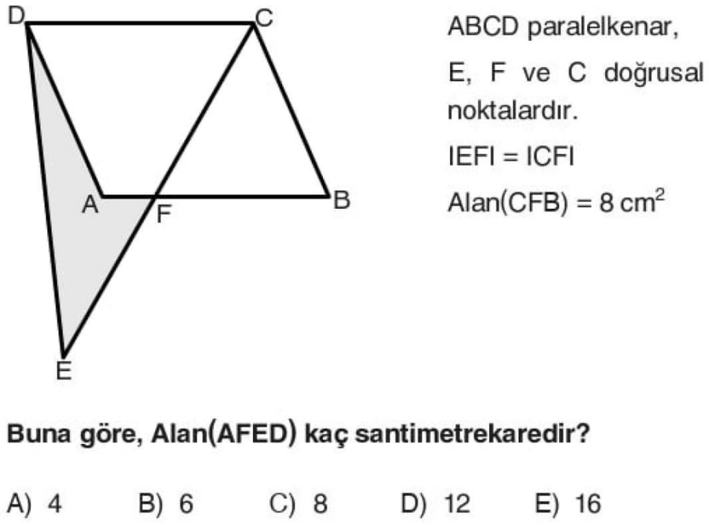
Çözüm
- $|EF|=|FC|$ → $\text{Alan}(DFE)=\text{Alan}(DFC)=\tfrac12 S$ ($S$: paralelkenar alanı, $h$: yükseklik).
- $\text{Alan}(AFED)=\text{Alan}(DFE)-\text{Alan}(DAF)=\tfrac12|AB|h-\tfrac12|AF|h=\tfrac12|FB|h$.
- Bu da $\text{Alan}(CFB)=8$'e eşittir.
Cevap: C
Deneme - 4 · Soru 2Cevap: E
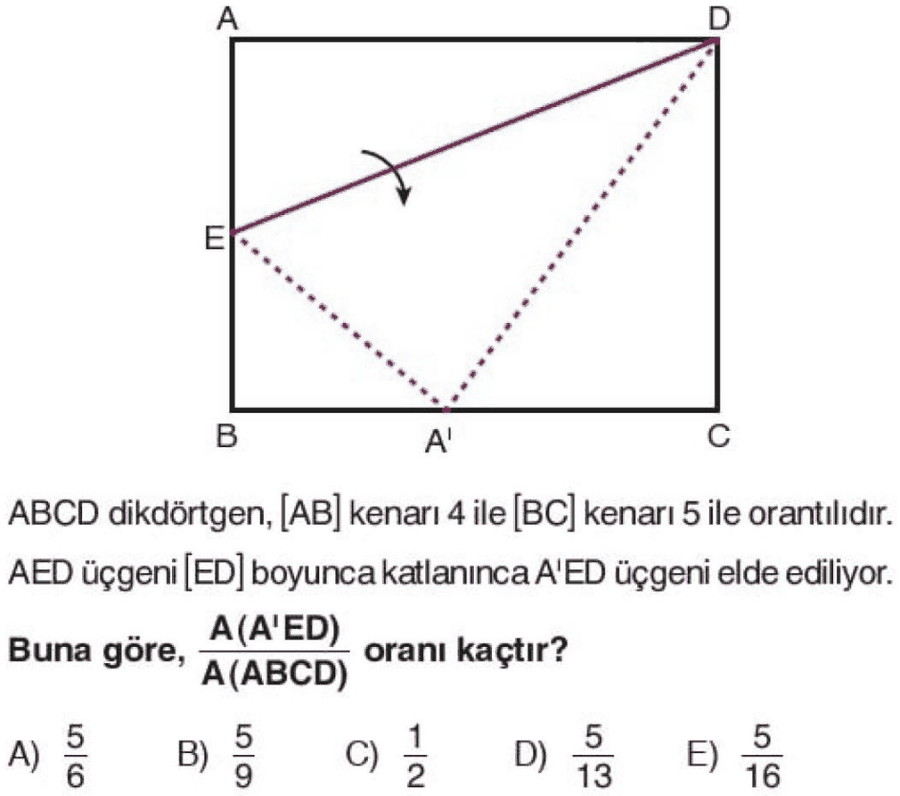
Çözüm
- $|AB|=4k$, $|AD|=5k$; katlamada $|DA'|=5k$ → $|A'C|=3k$, $|BA'|=2k$.
- $|AE|=x$: $x^2=(4k-x)^2+4k^2$ → $x=\tfrac{5k}{2}$.
- $\text{Alan}(A'ED)=\tfrac12\cdot\tfrac{5k}{2}\cdot5k=\tfrac{25k^2}{4}$; oran $\dfrac{25k^2/4}{20k^2}=\dfrac{5}{16}$.
Cevap: E
Deneme - 4 · Soru 3Cevap: C
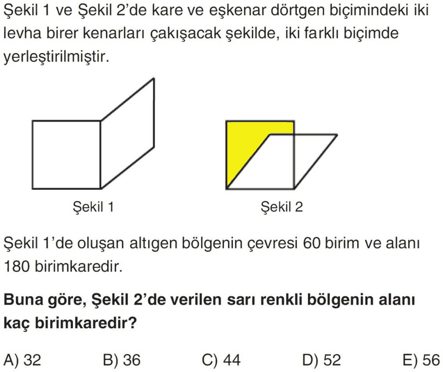
Çözüm
- Altıgenin çevresi $6s=60$ → $s=10$; alan $100+100\sin\theta=180$ → $\sin\theta=\tfrac45$, $\cot\theta=\tfrac34$.
- Şekil 2'de eşkenar dörtgenin karenin içine düşen kısmı: $\int_0^8(10-\tfrac34y)\,dy=56$.
- Sarı $=100-56=44$.
Cevap: C
Deneme - 4 · Soru 4Cevap: B
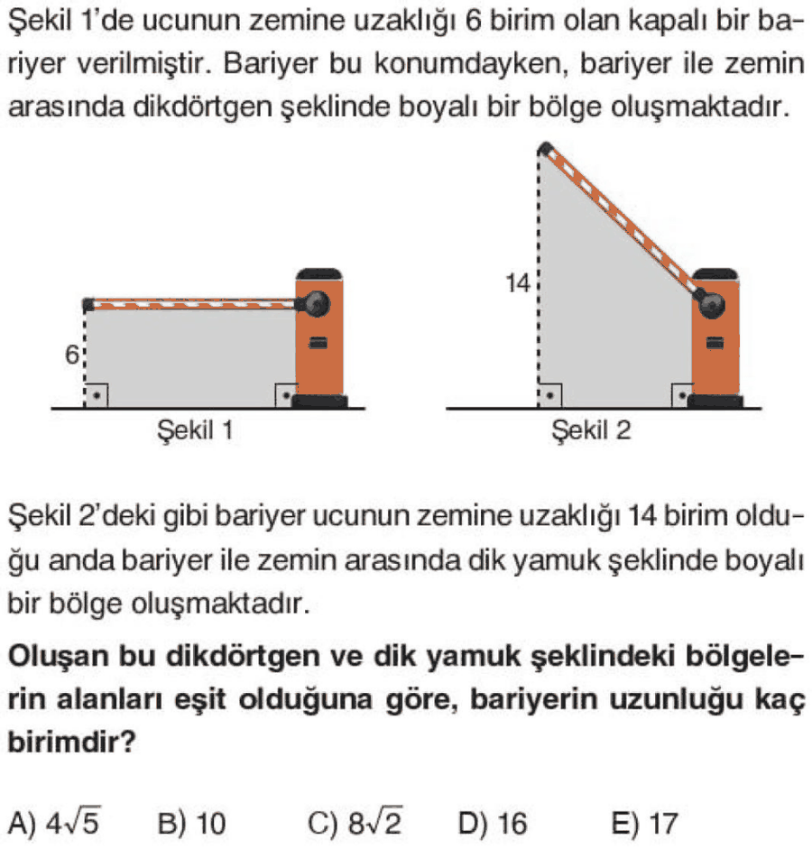
Çözüm
- Bariyer uzunluğu $L$: Şekil 1'de dikdörtgenin alanı $6L$.
- Şekil 2'de dik yamuk: paralel kenarlar 6 ve 14, genişlik $w$; $L^2=w^2+8^2$. Alan $=\dfrac{6+14}{2}w=10w$.
- $6L=10w$ → $w=\tfrac35L$; $L^2=\tfrac{9}{25}L^2+64$ → $L=10$.
Cevap: B
Deneme - 4 · Soru 5Cevap: D
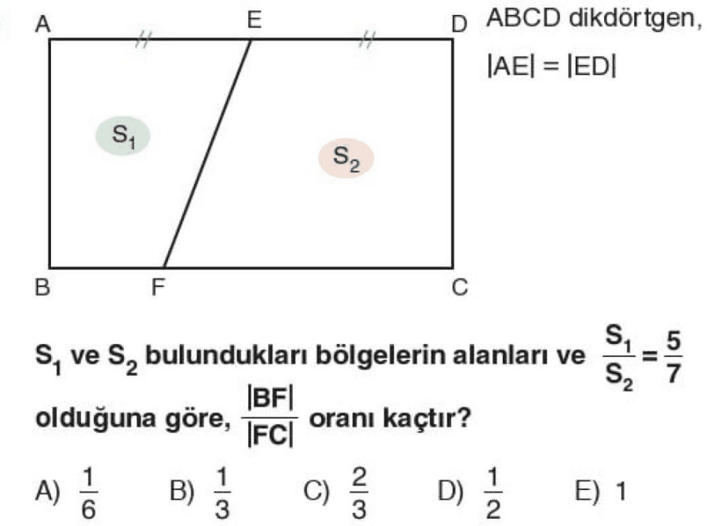
Çözüm
- $|AD|=a$, $|BF|=x$; $S_1=\dfrac{\tfrac a2+x}{2}h$, $S_2=\dfrac{\tfrac a2+a-x}{2}h$.
- $7(\tfrac a2+x)=5(\tfrac{3a}{2}-x)$ → $x=\tfrac a3$.
- $\dfrac{|BF|}{|FC|}=\dfrac{a/3}{2a/3}=\dfrac12$.
Cevap: D
Deneme - 4 · Soru 6Cevap: B
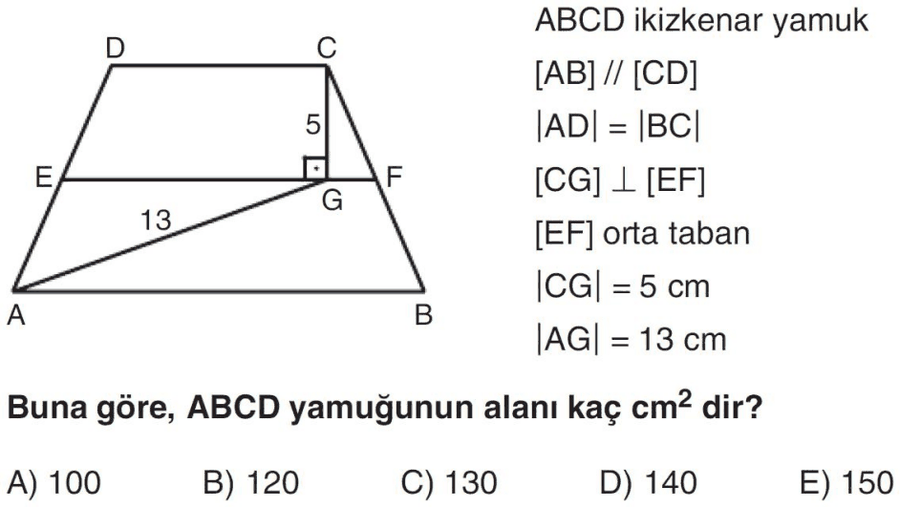
Çözüm
- $[EF]$ orta taban → $C$'nin $[EF]$'ye uzaklığı $h/2$: $h=2\cdot5=10$.
- $A$'nın $[EF]$'ye uzaklığı 5 → $A$ ile $G$ arası yatay $\sqrt{13^2-5^2}=12$; $G$, $C$'nin tam altında.
- İkizkenar yamukta bu yatay uzaklık orta taban uzunluğudur: $\dfrac{|AB|+|DC|}{2}=12$.
- $\text{Alan}=12\cdot10=120$.
Cevap: B
Deneme - 4 · Soru 7Cevap: C
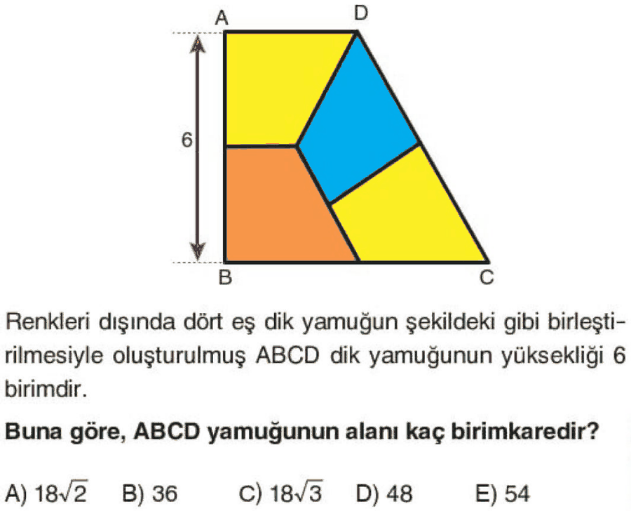
Çözüm
- Eş dört parça $ABCD$'yi oluşturduğu için her parça $ABCD$'ye benzer ve oranı $\tfrac12$'dir (alan oranı $\tfrac14$).
- Bu dik yamukta kısa taban $a$, uzun taban $2a$ ve eğik kenar uzun tabana eşittir; yükseklik $\sqrt{(2a)^2-a^2}=a\sqrt3$.
- $a\sqrt3=6$ → $a=2\sqrt3$; $\text{Alan}=\dfrac{2\sqrt3+4\sqrt3}{2}\cdot6=18\sqrt3$.
Cevap: C
Deneme - 4 · Soru 8Cevap: E
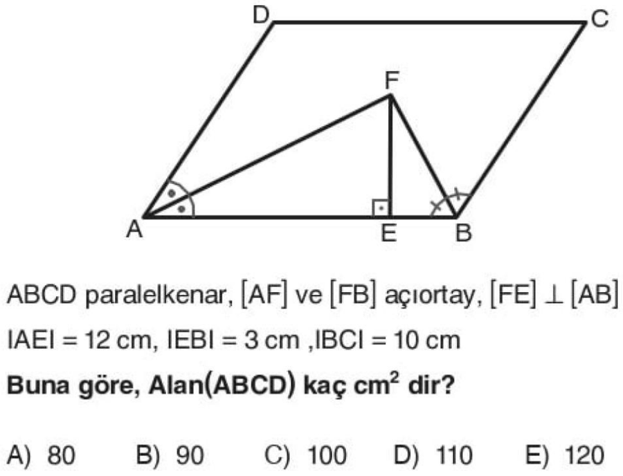
Çözüm
- Komşu açıların açıortayları dik kesişir: $m(\widehat{AFB})=90^\circ$; $|FE|^2=12\cdot3=36$ → $|FE|=6$.
- $\tan\tfrac{A}{2}=\tfrac{6}{12}=\tfrac12$ → $\tan A=\tfrac43$, $\sin A=\tfrac45$.
- $\text{Alan}=|AB|\cdot|AD|\sin A=15\cdot10\cdot\tfrac45=120$.
Cevap: E
Deneme - 4 · Soru 9Cevap: C
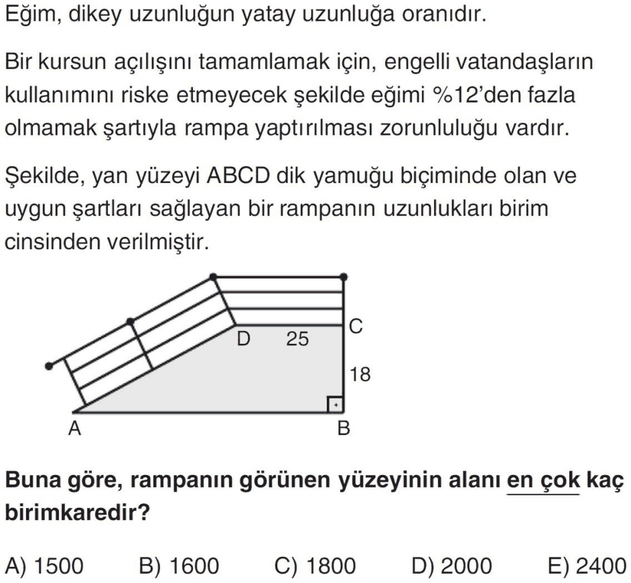
Çözüm
- Eğim en çok %12: düşey 18 için yatay en az $\dfrac{18}{0.12}=150$.
- Yan yüz dik yamuk: tabanlar 25 ve $25+150=175$, yükseklik 18.
- $\text{Alan}=\dfrac{25+175}{2}\cdot18=1800$.
Cevap: C
Deneme - 4 · Soru 10Cevap: A
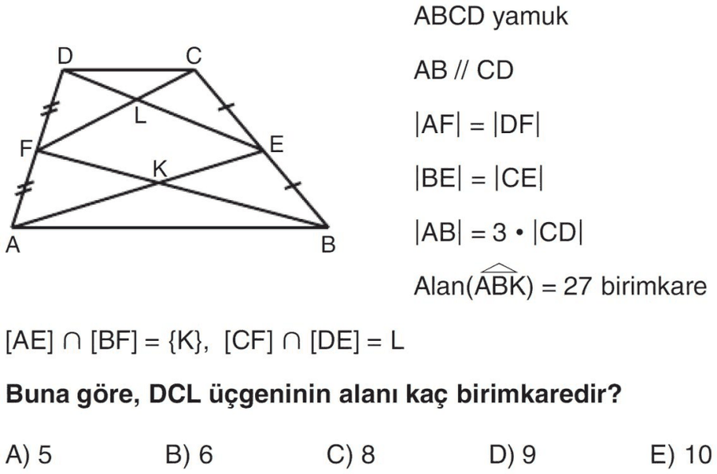
Çözüm
- Afin olarak $A(0,0)$, $B(6,0)$, $D(2,2)$, $C(4,2)$ al ($|AB|=3|CD|$); $F(1,1)$, $E(5,1)$.
- $K=(3,\,0.6)$ → $\text{Alan}(ABK)=1.8$; $L=(3,\,\tfrac53)$ → $\text{Alan}(DCL)=\tfrac13$.
- Oran $\dfrac{1/3}{1.8}=\dfrac{1}{5.4}$ → $\text{Alan}(DCL)=\dfrac{27}{5.4}=5$.
Cevap: A
Deneme - 4 · Soru 11Cevap: D
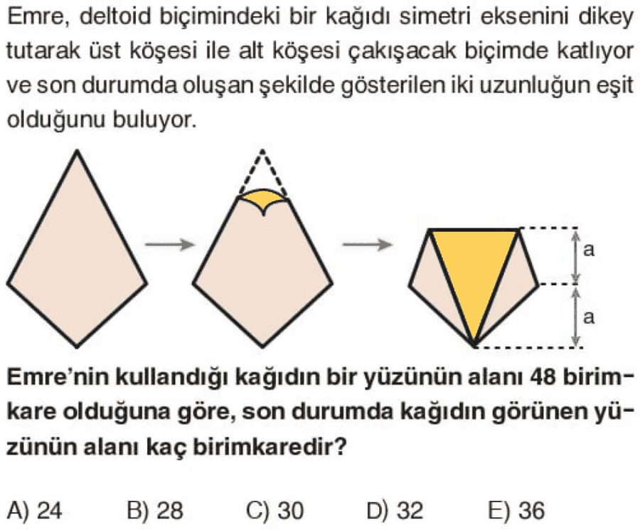
Çözüm
- Eksen uzunluğu $H$, yan köşeler alttan $a$ yükseklikte; katlama çizgisi $\tfrac H2$'de ve $\tfrac H2-a=a$ → $H=4a$; genişlik $w$, $2aw=48$.
- Üstteki parça (katlanan) tabanı $\tfrac{2w}{3}$, yüksekliği $2a$ olan üçgen: alanı $\tfrac{2aw}{3}=16$; katlanınca tamamen alt parçanın üstüne gelir.
- Görünen yüz = alt parça $=48-16=32$.
Cevap: D
Deneme - 4 · Soru 12Cevap: E
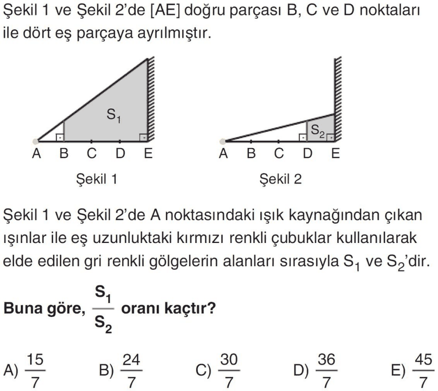
Çözüm
- $|AB|=1$ birim, çubuk boyu $r$; ışın eğimi çubuğun yerine göre belirlenir.
- Şekil 1: çubuk $B$'de → $E$'de gölge yüksekliği $4r$; $S_1=\tfrac{r+4r}{2}\cdot3=\tfrac{15r}{2}$.
- Şekil 2: çubuk $D$'de → $E$'de $\tfrac{4r}{3}$; $S_2=\tfrac{r+4r/3}{2}\cdot1=\tfrac{7r}{6}$.
- $\dfrac{S_1}{S_2}=\dfrac{45}{7}$.
Cevap: E
DENEME - 5
Deneme - 5 · Soru 1Cevap: C
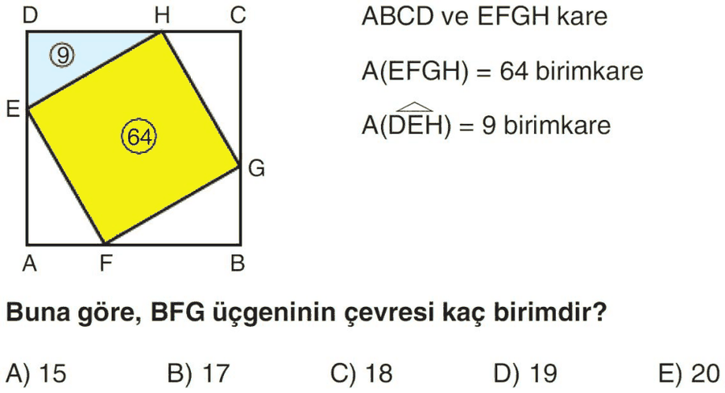
Çözüm
- $EFGH$ kenarı 8; köşelerdeki dört dik üçgen eş, dik kenarlar $p$, $q$: $\tfrac{pq}{2}=9$, $p^2+q^2=64$.
- $(p+q)^2=64+36=100$ → $p+q=10$.
- $\text{Çevre}(BFG)=p+q+8=18$.
Cevap: C
Deneme - 5 · Soru 2Cevap: D
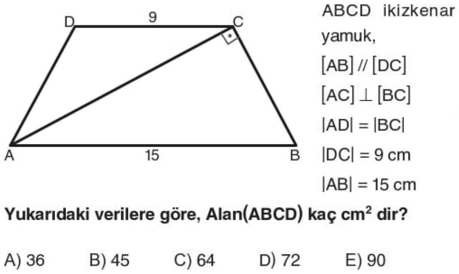
Çözüm
- İkizkenar yamukta $C$'nin $[AB]$'ye izdüşümü $H$ ise $|AH|=\dfrac{15+9}{2}=12$, $|HB|=3$.
- $ACB$ dik üçgeninde ($C$ dik) $[CH]$ yükseklik: $|CH|^2=12\cdot3=36$ → $h=6$.
- $\text{Alan}=\dfrac{15+9}{2}\cdot6=72$.
Cevap: D
Deneme - 5 · Soru 3Cevap: E
Çözüm
- Başlangıç alanı $\tfrac{6+10}{2}\cdot8=64$.
- 1. aşama: çıkan alan 4 = $\tfrac{1+3}{2}h_1$ → $h_1=2$ (alttan). 2. aşama: çıkan alan 20 = $\tfrac{1+7}{2}h_2$ → $h_2=5$ (üstten).
- Kırmızı çizgiler alttan 2 ve $8-5=3$ yükseklikte; aralarındaki uzaklık 1.
Cevap: E
Deneme - 5 · Soru 4Cevap: B
Çözüm
- $|AB|=b$, $|DC|=c$: $|AF|=\tfrac{b-c}{2}+3$, $|EC|=c-3$, $|BF|=\tfrac{b+c}{2}-3=7$.
- $b+c=20$ ve $|AF|=|EC|$ → $c=8$, $b=12$, $|AF|=|EC|=5$.
- $\dfrac{\text{Alan}(AFED)}{\text{Alan}(FBCE)}=\dfrac{(5+3)/2}{(7+5)/2}=\dfrac23$.
Cevap: B
Deneme - 5 · Soru 5Cevap: A
Çözüm
- $|AD|=|BC|=4$, köşegenler birbirini ortalar: $|AO|=5$ ($O$ kesişim).
- $[AD]\perp[BD]$ → $ADO$ dik üçgen: $|DO|=\sqrt{25-16}=3$, $|BD|=6$.
- $\text{Alan}(ABD)=\tfrac{4\cdot6}{2}=12$ → $\text{Alan}(ABCD)=24$.
Cevap: A
Deneme - 5 · Soru 6Cevap: C
Çözüm
- $|AB|=a$, $|DC|=c$ olsun; ikizkenar yamukta $|AE|=\tfrac{a-c}{2}$, $|EB|=\tfrac{a+c}{2}$. $F$'nin yüksekliği $y$, yamuğun yüksekliği $h$.
- $\dfrac{\text{Alan}(EBF)}{\text{Alan}(AFE)}=\dfrac{|EB|}{|AE|}=\dfrac{6}{4}$ → $a=5c$, yani $|AE|=2c$.
- $\text{Alan}(AFE)=\tfrac12\cdot2c\cdot y=cy=4$; $\text{Alan}(DFC)=\tfrac12 c(h-y)=8$ → $c(h-y)=16$ → $ch=20$.
- $\text{Alan}(ABCD)=\dfrac{5c+c}{2}\,h=3ch=60$.
Cevap: C
Deneme - 5 · Soru 7Cevap: E
Çözüm
- $AECD$ paralelkenar, $|AE|=e$; $|CM|:|MB|=1:2$ → $KM$ yamuğun yüksekliğini $1:2$ böler.
- Üst sarı $=\tfrac{eh}{3}$, mavi $=\tfrac{2eh}{3}$; pembe $CLM$, $CEB$'nin $\tfrac19$'u: $\tfrac{(b-e)h}{18}$; alt sarı $\tfrac{4(b-e)h}{9}$.
- Sarılar eşit: $e=\tfrac43(b-e)$; $\dfrac{\text{mavi}}{\text{pembe}}=\dfrac{12e}{b-e}=16$.
Cevap: E
Deneme - 5 · Soru 8Cevap: C
Çözüm
- 8 eş eşkenar dörtgen merkezde birleşiyor: merkez açısı $\tfrac{360^\circ}{8}=45^\circ$.
- Motifin çevresi 16 kenardan oluşur: $16s=32$ → $s=2$.
- Alan $=s^2\sin45^\circ=4\cdot\tfrac{\sqrt2}{2}=2\sqrt2$.
Cevap: C
Deneme - 5 · Soru 9Cevap: B
Çözüm
- $KLMN$ alanı 18 → kenar $3\sqrt2$, köşegen 6.
- Köşelerden 1'er birim: $ABCD$'nin köşegeni $6+2=8$.
- Kenar $=\dfrac{8}{\sqrt2}=4\sqrt2$.
Cevap: B
Deneme - 5 · Soru 10Cevap: D
Çözüm
- $m(\widehat{EBC})=75^\circ$, $m(\widehat{AEB})=75^\circ$; $[EB]$ açıortay → $m(\widehat{BEC})=75^\circ$ → $|BC|=|EC|$.
- $m(\widehat{CED})=180^\circ-150^\circ=30^\circ$, $|CD|=4$ → $|EC|=8=|BC|$.
- $\text{Alan}=4\cdot8=32$.
Cevap: D
Deneme - 5 · Soru 11Cevap: E
Çözüm
- $m(\widehat{FEC})=90^\circ$ ve $|FE|=|EC|$ → $AFE\cong DEC$: $|AE|=|DC|$, $|DE|=|AF|=5$.
- $|AB|=5+1=6=|DC|=|AE|$ → $|AD|=11$.
- $\text{Alan}=6\cdot11=66$.
Cevap: E
Deneme - 5 · Soru 12Cevap: C
Çözüm
- $E\in[AD]$ olduğundan $\text{Alan}(BEC)=\tfrac12\cdot60=30$.
- $|BF|=2|FE|$ → $\text{Alan}(BFC)=\tfrac23\cdot30=20$.
Cevap: C
DENEME - 6
Deneme - 6 · Soru 1Cevap: A
Çözüm
- Kare alanı $4\cdot84+4\cdot60=576$ → kenar 24, merkezden kenara 12.
- Çıkarılan üçgen: $\tfrac12\cdot t\cdot12=60$ → kenar üzerindeki taban $t=10$; köşeden kalan parça $\tfrac{24-10}{2}=7$.
- Deltoidin uzun kenarı $\sqrt{5^2+12^2}=13$; çevre $7+7+13+13=40$.
Cevap: A
Deneme - 6 · Soru 2Cevap: B
Çözüm
- Katlanan üçgen $ABE$'nin alanı $T$: görünen mavi $T$, görünen sarı $s^2-2T$.
- $s^2-2T=3T$ → $T=\tfrac{s^2}{5}$ → $|AE|=\tfrac{2s}{5}$, $|DE|=\tfrac{3s}{5}$.
- $\dfrac{|DE|}{|EA|}=\dfrac32$.
Cevap: B
Deneme - 6 · Soru 3Cevap: E
Çözüm
- $\text{Alan}(AKL)=64-\text{Alan}(ABK)-\text{Alan}(ADL)-\text{Alan}(KCL)$.
- $=64-16-16-8=24$.
Cevap: E
Deneme - 6 · Soru 4Cevap: B
Çözüm
- $S_1=(4\sqrt3)^2=48$.
- $m(\widehat{AKE})=120^\circ$, $|KE|=4\sqrt3$, $|AK|=|DE|=|CF|=6$: $S_3=6\cdot4\sqrt3\cdot\sin120^\circ=36$.
- $DE$, $AK$'ye paraleldir; $m(\widehat{EDC})=150^\circ$: $S_2=4\sqrt3\cdot6\cdot\sin150^\circ=12\sqrt3\approx20{,}8$.
- $S_1>S_3>S_2$.
Cevap: B
Deneme - 6 · Soru 5Cevap: C
Çözüm
- $ABD$ eşkenar üçgen, $|AB|=12$ → yükseklik $6\sqrt3$; bu, yamuğun yüksekliğidir.
- $D$'nin $[AB]$ üzerindeki izdüşümü orta noktadır ($A$'ya uzaklığı 6); $[BC]\perp[DC]$ olduğundan $|DC|=12-6=6$.
- $\text{Alan}=\dfrac{12+6}{2}\cdot6\sqrt3=54\sqrt3$.
Cevap: C
Deneme - 6 · Soru 6Cevap: E
Çözüm
- $|DC|:|AB|=1:2$; benzer $DEC$ ve $BEA$ üçgenlerinin alanları $k$ ve $4k$, yan üçgenler $2k$'şar.
- Toplam $k+4k+2k+2k=9k=54$ → $k=6$.
- $\text{Alan}(BEC)=2k=12$.
Cevap: E
Deneme - 6 · Soru 7Cevap: C
Çözüm
- $ABE$ dik üçgeni ($B$ dik), $[BF]\perp[AE]$: $|BF|^2=4\cdot1$ → $|BF|=2$, $|AB|^2=4\cdot5=20$.
- $ABD$ dik üçgeni ($A$ dik), $[AF]\perp[BD]$: $|AF|^2=|BF|\cdot|FD|$ → $16=2|FD|$, $|FD|=8$, $|BD|=10$.
- $|AD|^2=8\cdot10=80$; $\text{Alan}=2\sqrt5\cdot4\sqrt5=40$.
Cevap: C
Deneme - 6 · Soru 8Cevap: D
Çözüm
- Parçalar yer değiştirince $E$ ve $F$, $[AM]$ ve $[DM]$'nin orta noktaları olur: $|EF|=\tfrac{|AD|}{2}$, yani $|BE|+|FC|=\tfrac s2$.
- Boyalı bölge kesilen iki üçgen: $\tfrac12 s(|BE|+|FC|)=\tfrac{s^2}{4}=49$ → $s=14$.
- Çevre $4\cdot14=56$.
Cevap: D
Deneme - 6 · Soru 9Cevap: C
Çözüm
- $m(\widehat{DFE})=90^\circ$, $|DF|=|EF|$ → $DAF\cong FBE$: $|FB|=|AD|=8$, $|BE|=|AF|=a$.
- $\text{Alan}(CDFE)=8(a+8)-4a-4a=64$.
Cevap: C
Deneme - 6 · Soru 10Cevap: D
Çözüm
- $EFGH$ yamuk: $|EF|=\tfrac14|AB|$, $|HG|=\tfrac15|AB|$, yükseklik paralelkenarınkiyle aynı.
- $\text{Alan}(EFGH)=\dfrac{\tfrac14+\tfrac15}{2}\cdot S=\dfrac{9}{40}S=18$ → $S=80$.
Cevap: D
Deneme - 6 · Soru 11Cevap: B
Çözüm
- Ortak kenar $s$: düzgün altıgenin genişliği $2s$, eşkenar dörtgenin $s$; iki halının kısa kenarı $s\sqrt3$.
- Üstteki halı $2s+s+2s=5s$, alttaki $s+2s+s=4s$ uzunlukta.
- Alan farkı $s\cdot s\sqrt3=9\sqrt3$ → $s=3$; uzun kenar farkı $s=3$.
Cevap: B
Deneme - 6 · Soru 12Cevap: C
Çözüm
- Parça: yükseklik $h=|AB|$, tabanlar $a$ ve $b$, eğik kenar $a$ ($|AG|=|GF|$). Sağdaki iki parçanın yükseklikleri toplamı $|BF|=b=2h$.
- $a^2=(b-a)^2+h^2=(2h-a)^2+h^2$ → $a=\tfrac{5h}{4}$.
- Çevre $h+2b+4a=h+4h+5h=10h$ → $|AB|$'nin 10 katı.
Cevap: C
DENEME - 7
Deneme - 7 · Soru 1Cevap: D
Çözüm
- Merkezden kenara uzaklık 4 → eşkenar dörtgenin yüksekliği 8.
- $m(\widehat{ABC})=150^\circ$ → dar açı $30^\circ$: $a\sin30^\circ=8$ → $a=16$.
- $\text{Alan}=a\cdot h=16\cdot8=128$.
Cevap: D
Deneme - 7 · Soru 2Cevap: A
Çözüm
- $A(0,0)$, $B(w,0)$, $C(w,h)$, $D(0,h)$, $E(e,0)$; $F=AC\cap DE$'nin yüksekliği $\tfrac{he}{w+e}$.
- $\tfrac12 e\cdot\tfrac{he}{w+e}=\tfrac12(w-e)h$ → $e^2=w^2-e^2$.
- $\dfrac{|DC|}{|AE|}=\dfrac we=\sqrt2$.
Cevap: A
Deneme - 7 · Soru 3Cevap: B
Çözüm
- $|AB|=|DC|=6\sqrt2$; $|BE|^2=3^2+(6\sqrt2)^2=81$ → $|BE|=|EF|=9$.
- $|DE|^2=81-32=49$ → $|DE|=7$, $|AD|=10$.
- $\text{Alan}(BCFE)=60\sqrt2-\tfrac{3\cdot6\sqrt2}{2}-\tfrac{7\cdot4\sqrt2}{2}=37\sqrt2$.
Cevap: B
Deneme - 7 · Soru 4Cevap: D
Çözüm
- Büyük kare kenarı $a$, küçük $a-4$: $a^2-(a-4)^2=8a-16=72$ → $a=11$.
- Mor bölgenin çevresi $11+11+4+7+7+4=44$.
Cevap: D
Deneme - 7 · Soru 5Cevap: B
Çözüm
- Örtü köşegeni TV kenarıyla çakışık; köşegen $d$, görünen kısım önce yarım kare.
- 3 birim aşağı inince görünen alan, merkezden yukarı 3 birimlik şeritte kalan kısım kadar artar: $\int_0^3 (d-2y)\,dy=3d-9=15$ → $d=8$.
- Kenar $=\dfrac{d}{\sqrt2}=4\sqrt2$.
Cevap: B
Deneme - 7 · Soru 6Cevap: C
Çözüm
- $[AE]$'yi uzatıp $DC$ doğrusunu $P$'de kessin. $|BE|=|EC|$ olduğundan $ABE\cong PCE$ → $|CP|=|AB|$.
- $m(\widehat{DPA})=m(\widehat{EAB})=m(\widehat{DAE})$ → $|DA|=|DP|=|DC|+|AB|=16$.
- Yükseklik $|BC|=10$; $\text{Alan}=\dfrac{|AB|+|DC|}{2}\cdot10=\dfrac{16}{2}\cdot10=80$.
Cevap: C
Deneme - 7 · Soru 7Cevap: E
Çözüm
- $|AE|=a$, $|CF|=c$ → $|EF|=a+c$, $|AC|=2(a+c)$; alan $S$ ise $\text{Alan}(ABC)=\text{Alan}(ACD)=\tfrac S2$.
- Aynı yükseklikte alan tabanla orantılı: $\text{Alan}(ABF)=\tfrac{|AF|}{|AC|}\cdot\tfrac S2$, $\text{Alan}(CDE)=\tfrac{|CE|}{|AC|}\cdot\tfrac S2$.
- $|AF|+|CE|=3(a+c)=\tfrac32|AC|$ → $27+24=\tfrac32\cdot\tfrac S2$ → $S=68$.
Cevap: E
Deneme - 7 · Soru 8Cevap: C
Çözüm
- Her parça $10$ birim; kapalıyken direkler arası $20$ birim.
- $60^\circ$ açılınca yükseklik $10\sin60^\circ=5\sqrt3$, uçlar arası $20-2\cdot10\cos60^\circ=10$.
- $\text{Alan}=\dfrac{20+10}{2}\cdot5\sqrt3=75\sqrt3$.
Cevap: C
Deneme - 7 · Soru 9Cevap: B
Çözüm
- $|AD|=|AB|$ → simetri ekseni $[AC]$, $[BD]\perp[AC]$ ($H$ kesişim).
- Katlanınca $C$, $[AH]$ üzerinde $H$'den $|HC|$ uzaklığa gelir; ağırlık merkezi olduğundan $|AH|=3|HC|$.
- $\text{Alan}(ABD)=3\cdot15=45$; deltoid $45+15=60$.
Cevap: B
Deneme - 7 · Soru 10Cevap: E
Çözüm
- $|FB|=2k$, $|CF|=3k$, $|AD|=5k$; $EFB\sim EAD$: $\dfrac{|BE|}{|BD|}=\dfrac27$.
- $\text{Alan}(ABE)=\tfrac27\cdot\tfrac S2=\tfrac S7$, $\text{Alan}(ABF)=\tfrac25\cdot\tfrac S2=\tfrac S5$ → $\text{Alan}(EFB)=\tfrac{2S}{35}$.
- $\text{Alan}(EFCD)=\tfrac S2-\tfrac{2S}{35}=\tfrac{31S}{70}=62$ → $S=140$.
Cevap: E
Deneme - 7 · Soru 11Cevap: C
Çözüm
- Katlamada $m(\widehat{KDB})=m(\widehat{DBC})=m(\widehat{KBD})$ → $|KB|=|KD|$; $ABK\cong C'DK$.
- $\text{Alan}(KC'D)=\text{Alan}(ABK)=\dfrac{|AK|}{|AD|}\cdot\dfrac S2=\dfrac14\cdot\dfrac S2=\dfrac S8$.
Cevap: C
Deneme - 7 · Soru 12Cevap: E
Çözüm
- $[BF$ açıortay ve $AD\parallel BC$ → $m(\widehat{ABF})=m(\widehat{AFB})=\beta$, $|AB|=|AF|=s$; $|AF|=|FD|$ → $|AD|=2s$.
- Paralelkenarda karşı açıların iç açıortayları paraleldir; $[DE]$ bu yüzden dış açıortaydır ve $[DE]\perp[BE]$.
- $ABF$'de $|BF|=2s\cos\beta=6$; $FED$ dik üçgeninde $|DE|=s\sin\beta=4$ → $s=5$, $\sin\beta=\tfrac45$, $\cos\beta=\tfrac35$.
- $\text{Alan}=|AB|\cdot|AD|\sin2\beta=5\cdot10\cdot\tfrac{24}{25}=48$.
Cevap: E
DENEME - 8
Deneme - 8 · Soru 1Cevap: C
Çözüm
- Yamukta köşegenlerin ayırdığı yan üçgenler eşit alanlıdır: $\text{Alan}(AED)=\text{Alan}(BEC)=S$.
- $|AK|=2|KE|$ → $|KE|=\tfrac13|AE|$; $\text{Alan}(DEK)=\tfrac13 S=10$ → $S=30$.
- $3|EL|=2|BL|$ → $|BL|=\tfrac35|EB|$; $\text{Alan}(BCL)=\tfrac35\cdot30=18$.
Cevap: C
Deneme - 8 · Soru 2Cevap: A
Çözüm
- Afin olarak $A(0,0)$, $B(6,0)$, $D(0,6)$, $C(6,6)$; $K(3,6)$, $E(2,0)$, $F(4,0)$.
- $H=AK\cap DE=(1.2,\,2.4)$, $G=AK\cap DF=(\tfrac{12}{7},\tfrac{24}{7})$.
- $\text{Alan}(DGH)=\tfrac{10.8}{7}$; oran $\dfrac{10.8/7}{36}=\dfrac{3}{70}$.
Cevap: A
Deneme - 8 · Soru 3Cevap: B
Çözüm
- $|AE|=8$; $\theta=m(\widehat{CAB})$: $|AF|=5\cos\theta$, $|AB|=10\cos\theta$.
- $AEB$ dik üçgeninde $|AE|=|AB|\cos\theta=10\cos^2\theta=8$ → $\tan\theta=\tfrac12$.
- $|BE|=8\cdot\tfrac12=4$; köşegenler 16 ve 8 → $\text{Alan}=\tfrac{16\cdot8}{2}=64$.
Cevap: B
Deneme - 8 · Soru 4Cevap: C
Çözüm
- Köşegenler dik: $BHC$ dik üçgeninde $|HN|^2=4\cdot9=36$ → $|HN|=|KC|=6$.
- $|BC|=13$, $|BH|^2=4\cdot13$ → $|DH|=2\sqrt{13}$; $|HC|^2=9\cdot13$ → $|HC|=3\sqrt{13}$.
- $\text{Alan}(HDC)=\tfrac12\cdot2\sqrt{13}\cdot3\sqrt{13}=39$; $|DK|=13-6=7$ → $\text{Alan}(HKD)=\tfrac{7}{13}\cdot39=21$.
Cevap: C
Deneme - 8 · Soru 5Cevap: E
Çözüm
- Dolapların sol üst köşeleri camekanın köşegeninde: $(x,1)$, $(x+1,2)$ aynı doğruda → eğim 1, köşegen $y=x$ ve $x=1$.
- Büyük dolap $(4,4)$ köşeli → kenar 4; camekan kenarı $1+1+2+4=8$.
- Görünen alan $64-1-4-16=43$.
Cevap: E
Deneme - 8 · Soru 6Cevap: A
Çözüm
- $EFGH$: $|HF|^2=6^2+7^2=85=|HE|^2+9^2$ → $|HE|=2$; $f(EFGH)=9+7+6+2=24$.
- $KLMN$: $|KN|=|KL|=6$, $m(\widehat K)=60^\circ$ → $|NL|=6$, $m(\widehat{LNM})=150^\circ-60^\circ=90^\circ$ → $|LM|=10$.
- $f(KLMN)=6+6+10+8=30$; fark $6$.
Cevap: A
Deneme - 8 · Soru 7Cevap: D
Çözüm
- Kareli zeminde $[AD]$ ve $[BC]$ yataydır: $|AD|=2$, $|BC|=6$ birim; aralarındaki uzaklık 4 birim.
- $ABCD$ yamuk: $\text{Alan}=\dfrac{2+6}{2}\cdot4=16$.
Cevap: D
Deneme - 8 · Soru 8Cevap: E
Çözüm
- $m(\widehat{EAB})=\alpha$, $m(\widehat{DAE})=2\alpha$; $|AE|=|BC|=|AD|$ → $ADE$ ikizkenar, $|DE|=2|AE|\sin\alpha=6$.
- $ABE$'de $m(\widehat{ABE})=90^\circ-2\alpha$; sinüs teoremi: $\dfrac{|AE|}{\cos2\alpha}=\dfrac{5}{\sin\alpha}$ → $5\cos2\alpha=3$.
- $\cos2\alpha=\tfrac35$, $\sin2\alpha=\tfrac45$, $|AE|=3\sqrt5$, $\cos\alpha=\tfrac{2}{\sqrt5}$.
- $\text{Alan}(ADE)=\tfrac12\cdot45\cdot\tfrac45=18$, $\text{Alan}(ABE)=\tfrac12\cdot3\sqrt5\cdot5\cos\alpha=15$.
- $\text{Alan}(ABCD)=2\cdot(18+15)=66$.
Cevap: E
Deneme - 8 · Soru 9Cevap: C
Çözüm
- Şekil 5×4 birim kare: 6 dikey tel × 4 birim + 5 yatay tel × 5 birim = 49 birim uzunluk.
- $49u=98$ → birim kenar 2 m.
- Alan $=20\cdot2^2=80$ m².
Cevap: C
Deneme - 8 · Soru 10Cevap: D
Çözüm
- Kenar $a$: $|AE|=\tfrac a2$, $ABE$ dik üçgen.
- $a^2+\tfrac{a^2}{4}=(3\sqrt5)^2=45$ → $a^2=36$.
- Karenin alanı 36.
Cevap: D
Deneme - 8 · Soru 11Cevap: E
Çözüm
- $m(\widehat{ADC})=90^\circ$, $[DE]$ açıortay → $DAF$ ikizkenar dik üçgen: $|AD|=|AF|=\tfrac{6\sqrt2}{\sqrt2}=6$.
- $m(\widehat{EFB})=45^\circ$, $[DE]\perp[EB]$ → $|FB|=2\sqrt2\cdot\sqrt2=4$; $|AB|=10$.
- $|BC|=10$, yükseklik 6 → yatay fark 8 → $|DC|=2$.
- $\text{Alan}=\tfrac{10+2}{2}\cdot6=36$.
Cevap: E
Deneme - 8 · Soru 12Cevap: C
Çözüm
- Şekil 1: sıralar 2, 3, 4 kare → $|DC|=2$, yükseklik 3, $|AB|=2+3=5$: alan $\tfrac{21}{2}$.
- Şekil 2: sıralar 1, 2, 3 → $|NM|=1$, $|KL|=4$: alan $\tfrac{15}{2}$.
- Oran $\dfrac{21}{15}=\dfrac75$.
Cevap: C
Deneme - 8 · Soru 13Cevap: B
Çözüm
- $|AC|=6+7+2=15$. Paralelkenarda $B$'nin $[AC]$'ye dik izdüşümü $G$, $D$'ninkine simetriktir: $|CG|=|AE|=6$, $|AG|=9$.
- $ABF$ dik üçgeninde ($B$ dik) $[BG]$ yükseklik: $|BG|^2=|AG|\cdot|GF|=9\cdot4=36$ → $|BG|=6$.
- $x=|DE|=|BG|=6$.
Cevap: B